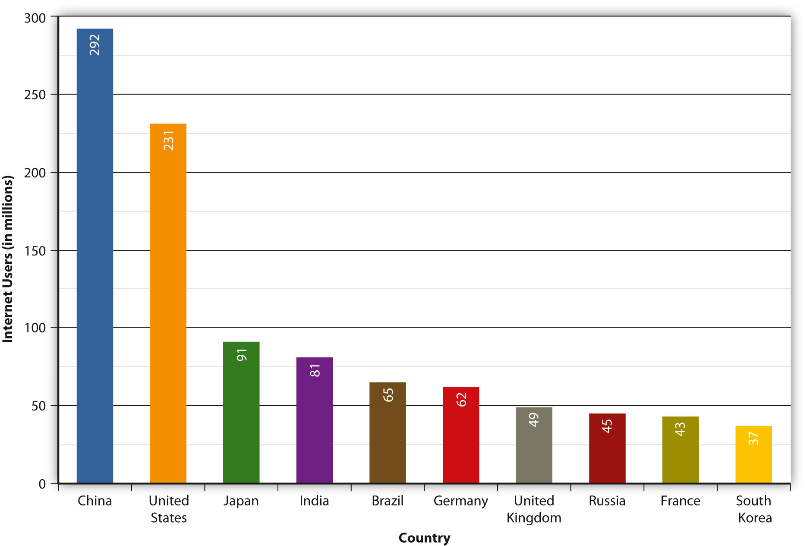

Figure 11.1

It used to be that applying for a job was fairly simple: send in a résumé, write a cover letter, and call a few references to make sure they will say positive things. The hiring manager understands that this is a biased view, designed to make the applicant look good, but that is all forgivable. After all, everyone applying for a particular job is going through this same process, and barring great disasters, the chances of something particularly negative reaching the desk of a hiring manager are not that great.
However, there is a new step that is now an integral part of this application process—hiding (or at least cleaning up) the applicants’ virtual selves. This could entail “Googling”—shorthand for searching on Google—their own name to see the search results. If the first thing that comes up is a Flickr album (an online photo album from the photo-sharing site Flickr) from last month’s Olympian-themed cocktail party, it may be a good idea to make that album private to ensure that only friends can view the album.
The ubiquity of Web 2.0 social media like Facebook and Twitter allows anyone to easily start developing an online persona from as early as birth (depending on the openness of one’s parents)—and although this online persona may not accurately reflect the individual, it may be one of the first things a stranger sees. Those online photos may not look bad to friends and family, but one’s online persona may be a hiring manager’s first impression of a prospective employee. Someone in charge of hiring could search the Internet for information on potential new hires even before calling references.
First impressions are an important thing to keep in mind when making an online persona professionally acceptable. Your presence online can be the equivalent of your first words to a brand-new acquaintance. Instead of showing a complete stranger your pictures from a recent party, it might be a better idea to hide those pictures and replace them with a well-written blog—or a professional-looking website.
The content on social networking sites like Facebook, where people use the Internet to meet new people and maintain old friendships, is nearly indestructible and may not actually belong to the user. In 2008, as Facebook was quickly gaining momentum, The New York Times ran an article, “How Sticky Is Membership on Facebook? Just Try Breaking Free”—a title that seems at once like a warning and a big-brother taunt. The website does allow the option of deactivating one’s account, but “Facebook servers keep copies of the information in those accounts indefinitely.”Maria Aspan, “How Sticky Is Membership on Facebook? Just Try Breaking Free,” New York Times, February 11, 2008, http://www.nytimes.com/2008/02/11/technology/11facebook.html. It is a double-edged sword: On one hand, users who become disillusioned and quit Facebook can come back at any time and resume their activity; on the other, one’s information is never fully deleted. If a job application might be compromised by the presence of a Facebook profile, clearing the slate is possible, albeit with some hard labor. The user must delete, item by item, every individual wall post, every group membership, every photo, and everything else.
Not all social networks are like this—MySpace and Friendster still require users who want to delete their accounts to confirm this several times, but they offer a clear-cut “delete” option—but the sticky nature of Facebook information is nothing new.Maria Aspan, “How Sticky Is Membership on Facebook? Just Try Breaking Free,” New York Times, February 11, 2008, http://www.nytimes.com/2008/02/11/technology/11facebook.html. Google even keeps a cache of deleted web pages, and the Internet Archive keeps decades-old historical records. This transition from ephemeral media—television and radio, practically over as quickly as they are broadcast—to the enduring permanence of the Internet may seem strange, but in some ways it is built into the very structure of the system. Understanding how the Internet was conceived may help elucidate the ways in which the Internet functions today—from the difficulties of deleting an online persona to the speedy and near-universal access to the world’s information.
From its early days as a military-only network to its current status as one of the developed world’s primary sources of information and communication, the InternetA web of interconnected computers and all of the information publicly available on these computers. has come a long way in a short period of time. Yet there are a few elements that have stayed constant and that provide a coherent thread for examining the origins of the now-pervasive medium. The first is the persistence of the Internet—its Cold War beginnings necessarily influencing its design as a decentralized, indestructible communication network.
The second element is the development of rules of communication for computers that enable the machines to turn raw data into useful information. These rules, or protocolsAn agreed-upon set of rules for two or more entities to communicate over a network., have been developed through consensus by computer scientists to facilitate and control online communication and have shaped the way the Internet works. Facebook is a simple example of a protocol: Users can easily communicate with one another, but only through acceptance of protocols that include wall posts, comments, and messages. Facebook’s protocols make communication possible and control that communication.
These two elements connect the Internet’s origins to its present-day incarnation. Keeping them in mind as you read will help you comprehend the history of the Internet, from the Cold War to the Facebook era.
The near indestructibility of information on the Internet derives from a military principle used in secure voice transmission: decentralizationThe principle that there should be no central hub that controls information flow. Instead, information is transferred via protocols that allow any computer to communicate directly with any other computer.. In the early 1970s, the RAND Corporation developed a technology (later called “packet switching”) that allowed users to send secure voice messages. In contrast to a system known as the hub-and-spoke model, where the telephone operator (the “hub”) would patch two people (the “spokes”) through directly, this new system allowed for a voice message to be sent through an entire network, or web, of carrier lines, without the need to travel through a central hub, allowing for many different possible paths to the destination.
During the Cold War, the U.S. military was concerned about a nuclear attack destroying the hub in its hub-and-spoke model; with this new web-like model, a secure voice transmission would be more likely to endure a large-scale attack. A web of data pathways would still be able to transmit secure voice “packets,” even if a few of the nodes—places where the web of connections intersected—were destroyed. Only through the destruction of all the nodes in the web could the data traveling along it be completely wiped out—an unlikely event in the case of a highly decentralized network.
This decentralized network could only function through common communication protocols. Just as we use certain protocols when communicating over a telephone—“hello,” “goodbye,” and “hold on for a minute” are three examples—any sort of machine-to-machine communication must also use protocols. These protocols constitute a shared language enabling computers to understand each other clearly and easily.
In 1973, the U.S. Defense Advanced Research Projects Agency (DARPA) began research on protocols to allow computers to communicate over a distributed networkA web of computers connected to one another, allowing intercomputer communication.. This work paralleled work done by the RAND Corporation, particularly in the realm of a web-based network model of communication. Instead of using electronic signals to send an unending stream of ones and zeros over a line (the equivalent of a direct voice connection), DARPA used this new packet-switching technology to send small bundles of data. This way, a message that would have been an unbroken stream of binary data—extremely vulnerable to errors and corruption—could be packaged as only a few hundred numbers.
Figure 11.2

Centralized versus distributed communication networks
Imagine a telephone conversation in which any static in the signal would make the message incomprehensible. Whereas humans can infer meaning from “Meet me [static] the restaurant at 8:30” (we replace the static with the word at), computers do not necessarily have that logical linguistic capability. To a computer, this constant stream of data is incomplete—or “corrupted,” in technological terminology—and confusing. Considering the susceptibility of electronic communication to noise or other forms of disruption, it would seem like computer-to-computer transmission would be nearly impossible.
However, the packets in this packet-switching technology have something that allows the receiving computer to make sure the packet has arrived uncorrupted. Because of this new technology and the shared protocols that made computer-to-computer transmission possible, a single large message could be broken into many pieces and sent through an entire web of connections, speeding up transmission and making that transmission more secure.
One of the necessary parts of a network is a host. A host is a physical node that is directly connected to the Internet and “directs traffic” by routing packets of data to and from other computers connected to it. In a normal network, a specific computer is usually not directly connected to the Internet; it is connected through a host. A host in this case is identified by an Internet Protocol, or IP, address (a concept that is explained in greater detail later). Each unique IP address refers to a single location on the global Internet, but that IP address can serve as a gateway for many different computers. For example, a college campus may have one global IP address for all of its students’ computers, and each student’s computer might then have its own local IP address on the school’s network. This nested structure allows billions of different global hosts, each with any number of computers connected within their internal networks. Think of a campus postal system: All students share the same global address (1000 College Drive, Anywhere, VT 08759, for example), but they each have an internal mailbox within that system.
The early Internet was called ARPANET, after the U.S. Advanced Research Projects Agency (which added “Defense” to its name and became DARPA in 1973), and consisted of just four hosts: UCLA, Stanford, UC Santa Barbara, and the University of Utah. Now there are over half a million hosts, and each of those hosts likely serves thousands of people.Central Intelligence Agency, “Country Comparison: Internet Hosts,” World Factbook, https://www.cia.gov/library/publications/the-world-factbook/rankorder/2184rank.html. Each host uses protocols to connect to an ever-growing network of computers. Because of this, the Internet does not exist in any one place in particular; rather, it is the name we give to the huge network of interconnected computers that collectively form the entity that we think of as the Internet. The Internet is not a physical structure; it is the protocols that make this communication possible.
Figure 11.3
A TCP gateway is like a post office because of the way that it directs information to the correct location.
One of the other core components of the Internet is the Transmission Control Protocol (TCP) gateway. Proposed in a 1974 paper, the TCP gateway acts “like a postal service.”Vinton Cerf, Yogen Dalal, and Carl Sunshine, “Specification of Internet Transmission Control Program,” December 1974, http://tools.ietf.org/html/rfc675. Without knowing a specific physical address, any computer on the network can ask for the owner of any IP address, and the TCP gateway will consult its directory of IP address listings to determine exactly which computer the requester is trying to contact. The development of this technology was an essential building block in the interlinking of networks, as computers could now communicate with each other without knowing the specific address of a recipient; the TCP gateway would figure it all out. In addition, the TCP gateway checks for errors and ensures that data reaches its destination uncorrupted. Today, this combination of TCP gateways and IP addresses is called TCP/IP and is essentially a worldwide phone book for every host on the Internet.
Email has, in one sense or another, been around for quite a while. Originally, electronic messages were recorded within a single mainframe computer system. Each person working on the computer would have a personal folder, so sending that person a message required nothing more than creating a new document in that person’s folder. It was just like leaving a note on someone’s desk,Ian Peter, “The History of Email,” The Internet History Project, 2004, http://www.nethistory.info/History%20of%20the%20Internet/email.html. so that the person would see it when he or she logged onto the computer.
However, once networks began to develop, things became slightly more complicated. Computer programmer Ray Tomlinson is credited with inventing the naming system we have today, using the @ symbol to denote the server (or host, from the previous section). In other words, name@gmail.com tells the host “gmail.com” (Google’s email server) to drop the message into the folder belonging to “name.” Tomlinson is credited with writing the first network email using his program SNDMSG in 1971. This invention of a simple standard for email is often cited as one of the most important factors in the rapid spread of the Internet, and is still one of the most widely used Internet services.
The use of email grew in large part because of later commercial developments, especially America Online, that made connecting to email much easier than it had been at its inception. Internet service providers (ISPs) packaged email accounts with Internet access, and almost all web browsers (such as Netscape, discussed later in the section) included a form of email service. In addition to the ISPs, email services like Hotmail and Yahoo! Mail provided free email addresses paid for by small text ads at the bottom of every email message sent. These free “webmail” services soon expanded to comprise a large part of the email services that are available today. Far from the original maximum inbox sizes of a few megabytes, today’s email services, like Google’s Gmail service, generally provide gigabytes of free storage space.
Email has revolutionized written communication. The speed and relatively inexpensive nature of email makes it a prime competitor of postal services—including FedEx and UPS—that pride themselves on speed. Communicating via email with someone on the other end of the world is just as quick and inexpensive as communicating with a next-door neighbor. However, the growth of Internet shopping and online companies such as Amazon.com has in many ways made the postal service and shipping companies more prominent—not necessarily for communication, but for delivery and remote business operations.
In 1989, Tim Berners-Lee, a graduate of Oxford University and software engineer at CERN (the European particle physics laboratory), had the idea of using a new kind of protocol to share documents and information throughout the local CERN network. Instead of transferring regular text-based documents, he created a new language called hypertext markup language (HTML). Hypertext was a new word for text that goes beyond the boundaries of a single document. Hypertext can include links to other documents (hyperlinks), text-style formatting, images, and a wide variety of other components. The basic idea is that documents can be constructed out of a variety of links and can be viewed just as if they are on the user’s computer.
This new language required a new communication protocol so that computers could interpret it, and Berners-Lee decided on the name hypertext transfer protocol (HTTP). Through HTTP, hypertext documents can be sent from computer to computer and can then be interpreted by a browser, which turns the HTML files into readable web pages. The browser that Berners-Lee created, called World Wide Web, was a combination browser-editor, allowing users to view other HTML documents and create their own.Tim Berners-Lee, “The WorldWideWeb Browser,” 2009, http://www.w3.org/People/Berners-Lee/WorldWideWeb.
Figure 11.4

Tim Berners-Lee’s first web browser was also a web page editor.
Modern browsers, like Microsoft Internet Explorer and Mozilla Firefox, only allow for the viewing of web pages; other increasingly complicated tools are now marketed for creating web pages, although even the most complicated page can be written entirely from a program like Windows Notepad. The reason web pages can be created with the simplest tools is the adoption of certain protocols by the most common browsers. Because Internet Explorer, Firefox, Apple Safari, Google Chrome, and other browsers all interpret the same code in more or less the same way, creating web pages is as simple as learning how to speak the language of these browsers.
In 1991, the same year that Berners-Lee created his web browser, the Internet connection service Q-Link was renamed America Online, or AOL for short. This service would eventually grow to employ over 20,000 people, on the basis of making Internet access available (and, critically, simple) for anyone with a telephone line. Although the web in 1991 was not what it is today, AOL’s software allowed its users to create communities based on just about any subject, and it only required a dial-up modem—a device that connects any computer to the Internet via a telephone line—and the telephone line itself.
In addition, AOL incorporated two technologies—chat rooms and Instant Messenger—into a single program (along with a web browser). Chat rooms allowed many users to type live messages to a “room” full of people, while Instant Messenger allowed two users to communicate privately via text-based messages. The most important aspect of AOL was its encapsulation of all these once-disparate programs into a single user-friendly bundle. Although AOL was later disparaged for customer service issues like its users’ inability to deactivate their service, its role in bringing the Internet to mainstream users was instrumental.Tom Zeller, Jr., “Canceling AOL? Just Offer Your Firstborn,” New York Times, August 29, 2005, allhttp://www.nytimes.com/2005/08/29/technology/29link.html.
In contrast to AOL’s proprietary services, the World Wide Web had to be viewed through a standalone web browser. The first of these browsers to make its mark was the program Mosaic, released by the National Center for Supercomputing Applications at the University of Illinois. Mosaic was offered for free and grew very quickly in popularity due to features that now seem integral to the web. Things like bookmarks, which allow users to save the location of particular pages without having to remember them, and images, now an integral part of the web, were all inventions that made the web more usable for many people.National Center for Supercomputing Appliances, “About NCSA Mosaic,” 2010, http://www.ncsa.illinois.edu/Projects/mosaic.html.
Although the web browser Mosaic has not been updated since 1997, developers who worked on it went on to create Netscape Navigator, an extremely popular browser during the 1990s. AOL later bought the Netscape company, and the Navigator browser was discontinued in 2008, largely because Netscape Navigator had lost the market to Microsoft’s Internet Explorer web browser, which came preloaded on Microsoft’s ubiquitous Windows operating system. However, Netscape had long been converting its Navigator software into an open-source program called Mozilla Firefox, which is now the second-most-used web browser on the Internet (detailed in Table 11.1 "Browser Market Share (as of February 2010)").NetMarketShare, “Browser Market Share,” http://marketshare.hitslink.com/browser-market-share.aspx?qprid=0&qpcal=1&qptimeframe=M&qpsp=132. Firefox represents about a quarter of the market—not bad, considering its lack of advertising and Microsoft’s natural advantage of packaging Internet Explorer with the majority of personal computers.
Table 11.1 Browser Market Share (as of February 2010)
Browser |
Total Market Share |
|---|---|
Microsoft Internet Explorer |
62.12% |
Firefox |
24.43% |
Chrome |
5.22% |
Safari |
4.53% |
Opera |
2.38% |
As web browsers became more available as a less-moderated alternative to AOL’s proprietary service, the web became something like a free-for-all of startup companies. The web of this period, often referred to as Web 1.0, featured many specialty sites that used the Internet’s ability for global, instantaneous communication to create a new type of business. Another name for this free-for-all of the 1990s is the “dot-com boom.” During the boom, it seemed as if almost anyone could build a website and sell it for millions of dollars. However, the “dot-com crash” that occurred later that decade seemed to say otherwise. Quite a few of these Internet startup companies went bankrupt, taking their shareholders down with them. Alan Greenspan, then the chairman of the U.S. Federal Reserve, called this phenomenon “irrational exuberance,”Alan Greenspan, “The Challenge of Central Banking in a Democratic Society, ” (lecture, American Enterprise Institute for Public Policy Research, Washington, DC, December 5, 1996), http://www.federalreserve.gov/boarddocs/speeches/1996/19961205.htm. in large part because investors did not necessarily know how to analyze these particular business plans, and companies that had never turned a profit could be sold for millions. The new business models of the Internet may have done well in the stock market, but they were not necessarily sustainable. In many ways, investors collectively failed to analyze the business prospects of these companies, and once they realized their mistakes (and the companies went bankrupt), much of the recent market growth evaporated. The invention of new technologies can bring with it the belief that old business tenets no longer apply, but this dangerous belief—the “irrational exuberance” Greenspan spoke of—is not necessarily conducive to long-term growth.
Some lucky dot-com businesses formed during the boom survived the crash and are still around today. For example, eBay, with its online auctions, turned what seemed like a dangerous practice (sending money to a stranger you met over the Internet) into a daily occurrence. A less-fortunate company, eToys.com, got off to a promising start—its stock quadrupled on the day it went public in 1999—but then filed for Chapter 11 "The Internet and Social Media" bankruptcy in 2001.Cecily Barnes, “eToys files for Chapter 11,” CNET, March 7, 2001, http://news.cnet.com/2100-1017-253706.html.
One of these startups, theGlobe.com, provided one of the earliest social networking services that exploded in popularity. When theGlobe.com went public, its stock shot from a target price of $9 to a close of $63.50 a share.Dawn Kawamoto, “TheGlobe.com’s IPO one for the books,” CNET, November 13, 1998, http://news.cnet.com/2100-1023-217913.html. The site itself was started in 1995, building its business on advertising. As skepticism about the dot-com boom grew and advertisers became increasingly skittish about the value of online ads, theGlobe.com ceased to be profitable and shut its doors as a social networking site.theglobe.com, “About Us,” 2009, http://www.theglobe.com/. Although advertising is pervasive on the Internet today, the current model—largely based on the highly targeted Google AdSense service—did not come around until much later. In the earlier dot-com years, the same ad might be shown on thousands of different web pages, whereas now advertising is often specifically targeted to the content of an individual page.
However, that did not spell the end of social networking on the Internet. Social networking had been going on since at least the invention of Usenet in 1979 (detailed later in the chapter), but the recurring problem was always the same: profitability. This model of free access to user-generated content departed from almost anything previously seen in media, and revenue streams would have to be just as radical.
The shared, generalized protocols of the Internet have allowed it to be easily adapted and extended into many different facets of our lives. The Internet shapes everything, from our day-to-day routine—the ability to read newspapers from around the world, for example—to the way research and collaboration are conducted. There are three important aspects of communication that the Internet has changed, and these have instigated profound changes in the way we connect with one another socially: the speed of information, the volume of information, and the “democratization” of publishing, or the ability of anyone to publish ideas on the web.
One of the Internet’s largest and most revolutionary changes has come about through social networking. Because of Twitter, we can now see what all our friends are doing in real time; because of blogs, we can consider the opinions of complete strangers who may never write in traditional print; and because of Facebook, we can find people we haven’t talked to for decades, all without making a single awkward telephone call.
Recent years have seen an explosion of new content and services; although the phrase “social media” now seems to be synonymous with websites like Facebook and Twitter, it is worthwhile to consider all the ways a social media platform affects the Internet experience.
Almost as soon as TCP stitched the various networks together, a former DARPA scientist named Larry Roberts founded the company Telnet, the first commercial packet-switching company. Two years later, in 1977, the invention of the dial-up modem (in combination with the wider availability of personal computers like the Apple II) made it possible for anyone around the world to access the Internet. With availability extended beyond purely academic and military circles, the Internet quickly became a staple for computer hobbyists.
One of the consequences of the spread of the Internet to hobbyists was the founding of Usenet. In 1979, University of North Carolina graduate students Tom Truscott and Jim Ellis connected three computers in a small network and used a series of programming scripts to post and receive messages. In a very short span of time, this system spread all over the burgeoning Internet. Much like an electronic version of community bulletin boards, anyone with a computer could post a topic or reply on Usenet.
The group was fundamentally and explicitly anarchic, as outlined by the posting “What is Usenet?” This document says, “Usenet is not a democracy … there is no person or group in charge of Usenet …Usenet cannot be a democracy, autocracy, or any other kind of ‘-acy.’”Mark Moraes, Chip Salzenberg, and Gene Spafford, “What is Usenet?” December 28, 1999, http://www.faqs.org/faqs/usenet/what-is/part1/. Usenet was not used only for socializing, however, but also for collaboration. In some ways, the service allowed a new kind of collaboration that seemed like the start of a revolution: “I was able to join rec.kites and collectively people in Australia and New Zealand helped me solve a problem and get a circular two-line kite to fly,” one user told the United Kingdom’s Guardian.Simon Jeffery and others, “A People’s History of the Internet: From Arpanet in 1969 to Today,” Guardian (London), October 23, 2009, http://www.guardian.co.uk/technology/interactive/2009/oct/23/internet-arpanet.
Fast-forward to 1995: The president and founder of Beverly Hills Internet, David Bohnett, announces that the name of his company is now “GeoCities.” GeoCities built its business by allowing users (“homesteaders”) to create web pages in “communities” for free, with the stipulation that the company placed a small advertising banner at the top of each page. Anyone could register a GeoCities site and subsequently build a web page about a topic. Almost all of the community names, like Broadway (live theater) and Athens (philosophy and education), were centered on specific topics.While GeoCities is no longer in business, the Internet Archive maintains the site at http://www.archive.org/web/geocities.php. Information taken from December 21, 1996.
This idea of centering communities on specific topics may have come from Usenet. In Usenet, the domain alt.rec.kites refers to a specific topic (kites) within a category (recreation) within a larger community (alternative topics). This hierarchical model allowed users to organize themselves across the vastness of the Internet, even on a large site like GeoCities. The difference with GeoCities was that it allowed users to do much more than post only text (the limitation of Usenet), while constraining them to a relatively small pool of resources. Although each GeoCities user had only a few megabytes of web space, standardized pictures—like mailbox icons and back buttons—were hosted on GeoCities’s main server. GeoCities was such a large part of the Internet, and these standard icons were so ubiquitous, that they have now become a veritable part of the Internet’s cultural history. The Web Elements category of the site Internet Archaeology is a good example of how pervasive GeoCities graphics became.Internet Archaeology, 2010, http://www.internetarchaeology.org/swebelements.htm.
GeoCities built its business on a freemium model, where basic services are free but subscribers pay extra for things like commercial pages or shopping carts. Other Internet businesses, like Skype and Flickr, use the same model to keep a vast user base while still profiting from frequent users. Since loss of online advertising revenue was seen as one of the main causes of the dot-com crash, many current web startups are turning toward this freemium model to diversify their income streams.Claire Cain Miller, “Ad Revenue on the Web? No Sure Bet,” New York Times, May 24, 2009, http://www.nytimes.com/2009/05/25/technology/start-ups/25startup.html.
GeoCities’s model was so successful that the company Yahoo! bought it for $3.6 billion at its peak in 1999. At the time, GeoCities was the third-most-visited site on the web (behind Yahoo! and AOL), so it seemed like a sure bet. A decade later, on October 26, 2009, Yahoo! closed GeoCities for good in every country except Japan.
Diversification of revenue has become one of the most crucial elements of Internet businesses; from the Wall Street Journal online to YouTube, almost every website is now looking for multiple income streams to support its services.
Websites have many different ways of paying for themselves, and this can say a lot about both the site and its audience. The business models of today’s websites may also directly reflect the lessons learned during the early days of the Internet. Start this exercise by reviewing a list of common ways that websites pay for themselves, how they arrived at these methods, and what it might say about them:
Choose a website that you visit often, and list which of these revenue streams the site might have. How might this affect the content on the site? Is there a visible effect, or does the site try to hide it? Consider how events during the early history of the Internet may have affected the way the site operates now. Write down a revenue stream that the site does not currently have and how the site designers might implement such a revenue stream.
Although GeoCities lost market share, and although theGlobe.com never really made it to the 21st century, social networkingA website that provides a way for people to interact with each other. Often, this involves “friends” and some method of communication, whether through photos, videos, or text. has persisted. There are many different types of social mediaAny social networking service. This is a blanket term for person-to-person connections on the Internet, unlike television, radio, or newspaper. available today, from social networking sites like Facebook to blogging services like Blogger and WordPress.com. All these sites bring something different to the table, and a few of them even try to bring just about everything to the table at once.
Social networking services—like Facebook, Twitter, LinkedInA social networking service that caters to business professionals looking for networking opportunities., Google BuzzGoogle’s social networking service that is built into its Gmail service., and MySpace—provide a limited but public platform for users to create a “profile.” This can range anywhere from the 140-character (that’s letters and spaces, not words) “tweets” on Twitter, to the highly customizable MySpace, which allows users to blog, customize color schemes, add background images, and play music. Each of these services has its key demographic—MySpace, for example, is particularly geared toward younger users. Its huge array of features made it attractive to this demographic at first, but eventually it was overrun with corporate marketing and solicitations for pornographic websites, leading many users to abandon the service. In addition, competing social networking sites like Facebook offer superior interfaces that have lured away many of MySpace’s users. MySpace has attempted to catch up by upgrading its own interface, but it now faces the almost insurmountable obstacle of already-satisfied users of competing social networking services. As Internet technology evolves rapidly, most users have few qualms about moving to whichever site offers the better experience; most users have profiles and accounts on many services at once. But as relational networks become more and more established and concentrated on a few social media sites, it becomes increasingly difficult for newcomers and lagging challengers to offer the same rich networking experience. For a Facebook user with hundreds of friends in his or her social network, switching to MySpace and bringing along his or her entire network of friends is a daunting and infeasible prospect. Google has attempted to circumvent the problem of luring users to create new social networks by building its Buzz service into its popular Gmail, ensuring that Buzz has a built-in user base and lowering the social costs of joining a new social network by leveraging users’ Gmail contact lists. It remains to be seen if Google will be truly successful in establishing a vital new social networking service, but its tactic of integrating Buzz into Gmail underscores how difficult it has become to compete with established social networks like Twitter and Facebook.
Whereas MySpace initially catered to a younger demographic, LinkedIn caters to business professionals looking for networking opportunities. LinkedIn is free to join and allows users to post resumes and job qualifications (rather than astrological signs and favorite television shows). Its tagline, “Relationships matter,” emphasizes the role of an increasingly networked world in business; just as a musician might use MySpace to promote a new band, a LinkedIn user can use the site to promote professional services. While these two sites have basically the same structure, they fulfill different purposes for different social groups; the character of social networking is highly dependent on the type of social circle.
Twitter offers a different approach to social networking, allowing users to “tweet” 140-character messages to their “followers,” making it something of a hybrid of instant messaging and blogging. Twitter is openly searchable, meaning that anyone can visit the site and quickly find out what other Twitter users are saying about any subject. Twitter has proved useful for journalists reporting on breaking news, as well as highlighting the “best of” the Internet. Twitter has also been useful for marketers looking for a free public forum to disseminate marketing messages. It became profitable in December 2009 through a $25 million deal allowing Google and Microsoft to display its users’ 140-character messages in their search results.Eliot Van Buskirk, “Twitter Earns First Profit Selling Search to Google, Microsoft,” Wired, December 21, 2009, http://www.wired.com/epicenter/2009/12/twitter-earns-first-profit-selling-search-to-google-microsoft. Facebook, originally deployed exclusively to Ivy League schools, has since opened its doors to anyone over 13 with an email account. With the explosion of the service and its huge growth among older demographics, “My parents joined Facebook” has become a common complaint.See the blog at http://myparentsjoinedfacebook.com/ for examples on the subject.
Another category of social media, blogs began as an online, public version of a diary or journal. Short for “web logs,” these personal sites give anyone a platform to write about anything they want to. Posting tweets on the Twitter service is considered micro-blogging (because of the extremely short length of the posts). Some services, like LiveJournal, highlight their ability to provide up-to-date reports on personal feelings, even going so far as to add a “mood” shorthand at the end of every post. The Blogger service (now owned by Google) allows users with Google accounts to follow friends’ blogs and post comments. WordPress.com, the company that created the open-source blogging platform WordPress.org, and LiveJournal both follow the freemium model by allowing a basic selection of settings for free, with the option to pay for things like custom styles and photo hosting space. What these all have in common, however, is their bundling of social networking (such as the ability to easily link to and comment on friends’ blogs) with an expanded platform for self-expression. At this point, most traditional media companies have incorporated blogs, Twitter, and other social media as a way to allow their reporters to update instantly and often. This form of media convergence, discussed in detail in Section 11.3 "The Effects of the Internet and Globalization on Popular Culture and Interpersonal Communication" of this chapter, is now a necessary part of doing business.
There are many other types of social media out there, many of which can be called to mind with a single name: YouTube (video sharing), Wikipedia (open-source encyclopedia composed of “wikis” editable by any user), Flickr (photo sharing), and Digg (content sharing). Traditional media outlets have begun referring to these social media services and others like them as “Web 2.0.” Web 2.0 is not a new version of the web; rather, the term is a reference to the increased focus on user-generated content and social interaction on the web, as well as the evolution of online tools to facilitate that focus. Instead of relying on professional reporters to get information about a protest in Iran, a person could just search for “Iran” on Twitter and likely end up with hundreds of tweets linking to everything from blogs to CNN.com to YouTube videos from Iranian citizens themselves. In addition, many of these tweets may actually be instant updates from people using Twitter in Iran. This allows people to receive information straight from the source, without being filtered through news organizations or censored by governments.
In 2009, Susan Boyle, an unemployed middle-aged Scottish woman, appeared on Britain’s Got Talent and sang “I Dreamed a Dream” from the musical Les Misérables, becoming an international star almost overnight. It was not her performance itself that catapulted her to fame and sent her subsequently released album to the top of the UK Billboard charts and kept it there for 6 weeks. What did it was a YouTube video of her performance, viewed by 87,000,000 people and counting.BritainsSoTalented, “Susan Boyle - Singer - Britains Got Talent 2009,” 2009, http://www.youtube.com/watch?v=9lp0IWv8QZY.
Figure 11.5

Susan Boyle turned from a successful television contestant into an international celebrity when the YouTube video of her performance went viral.
Media that is spread from person to person when, for example, a friend sends you a link saying “You’ve got to see this!” is said to have “gone viralWhen a video, news story, or photo is emailed or sent from person to person, without any direction from a mainstream source..” Marketing and advertising agencies have deemed advertising that makes use of this phenomenon as “viral marketingAn attempt by marketers to produce things that “go viral” in order to build hype for a product..” Yet many YouTube sensations have not come from large marketing firms. For instance, the four-piece pop-punk band OK Go filmed a music video on a tiny budget for their song “Here It Goes Again” and released it exclusively on YouTube in 2006. Featuring a choreographed dance done on eight separate treadmills, the video quickly became a viral sensation and, as of May 2011, has over 7,265,825 views. The video helped OK Go attract millions of new fans and earned them a Grammy award in 2007, making it one of the most notable successes of viral Internet marketing. Viral marketing is, however, notoriously unpredictable and is liable to spawn remixes, spin-offs, and spoofs that can dilute or damage the messages that marketers intend to spread. Yet, when it is successful, viral marketing can reach millions of people for very little money and can even make it into the mainstream news.
Recent successes and failures in viral marketing demonstrate how difficult it is for marketers to control their message as it is unleashed virally. In 2007, the band Radiohead released their album In Rainbows online, allowing fans to download it for any amount of money they chose—including for free. Despite practically giving the album away, the digital release of In Rainbows still pulled in more money than Radiohead’s previous album, Hail to the Thief, while the band simultaneously sold a huge number of $80 collector editions and still sold physical CDs months after the digital release became available.New Musical Express, “Radiohead Reveal How Successful ‘In Rainbows’ Download Really Was,” October 15, 2008, http://www.nme.com/news/radiohead/40444. In contrast, the food giant Healthy Choice enlisted Classymommy.com blogger Colleen Padilla to write a sponsored review of its product, leading to a featured New York Times article on the blogger (not the product), which gave the product only a passing mention.Pradnya Joshi, “Approval by a Blogger May Please a Sponsor,” New York Times, July 12, 2009, http://www.nytimes.com/2009/07/13/technology/internet/13blog.html. Often, a successfully marketed product will reach some people through the Internet and then break through into the mainstream media. Yet as the article about Padilla shows, sometimes the person writing about the product overshadows the product itself.
Not all viral media is marketing, however. In 2007, someone posted a link to a new trailer for Grand Theft Auto IV on the video games message board of the web forum 4chan.org. When users followed the link, they were greeted not with a video game trailer but with Rick Astley singing his 1987 hit “Never Gonna Give You Up.” This technique—redirecting someone to that particular music video—became known as Rickrolling and quickly became one of the most well-known Internet memesAny catchphrase, video, or piece of media that becomes a cultural symbol on the Internet. of all time.Fox News, “The Biggest Little Internet Hoax on Wheels Hits Mainstream,” April 22, 2008, http://www.foxnews.com/story/0,2933,352010,00.html. An Internet meme is a concept that quickly replicates itself throughout the Internet, and it is often nonsensical and absurd. Another meme, “Lolcats,” consists of misspelled captions—“I can has cheezburger?” is a classic example—over pictures of cats. Often, these memes take on a metatextual quality, such as the meme “Milhouse is not a meme,” in which the character Milhouse (from the television show The Simpsons) is told that he is not a meme. Chronicling memes is notoriously difficult, because they typically spring into existence seemingly overnight, propagate rapidly, and disappear before ever making it onto the radar of mainstream media—or even the mainstream Internet user.
Social media allows an unprecedented volume of personal, informal communication in real time from anywhere in the world. It allows users to keep in touch with friends on other continents, yet keeps the conversation as casual as a Facebook wall post. In addition, blogs allow us to gauge a wide variety of opinions and have given “breaking news” a whole new meaning. Now, news can be distributed through many major outlets almost instantaneously, and different perspectives on any one event can be aired concurrently. In addition, news organizations can harness bloggers as sources of real-time news, in effect outsourcing some of their news-gathering efforts to bystanders on the scene. This practice of harnessing the efforts of several individuals online to solve a problem is known as crowdsourcing.
The downside of the seemingly infinite breadth of online information is that there is often not much depth to the coverage of any given topic. The superficiality of information on the Internet is a common gripe among many journalists who are now rushed to file news reports several times a day in an effort to complete with the “blogosphere,” or the crowd of bloggers who post both original news stories and aggregate previously published news from other sources. Whereas traditional print organizations at least had the “luxury” of the daily print deadline, now journalists are expected to blog or tweet every story and file reports with little or no analysis, often without adequate time to confirm the reliability of their sources.Ken Auletta, “Non-Stop News,” Annals of Communications, New Yorker, January 25, 2010, http://www.newyorker.com/reporting/2010/01/25/100125fa_fact_auletta.
Additionally, news aggregatorsServices like Google News that aggregate stories from major professional news sources and present them in a streamlined format. like Google News profit from linking to journalists’ stories at major newspapers and selling advertising, but these profits are not shared with the news organizations and journalists who created the stories. It is often difficult for journalists to keep up with the immediacy of the nonstop news cycle, and with revenues for their efforts being diverted to news aggregators, journalists and news organizations increasingly lack the resources to keep up this fast pace. Twitter presents a similar problem: Instead of getting news from a specific newspaper, many people simply read the articles that are linked from a Twitter feed. As a result, the news cycle leaves journalists no time for analysis or cross-examination. Increasingly, they will simply report, for example, on what a politician or public relations representative says without following up on these comments or fact-checking them. This further shortens the news cycle and makes it much easier for journalists to be exploited as the mouthpieces of propaganda.
Consequently, the very presence of blogs and their seeming importance even among mainstream media has made some critics wary. Internet entrepreneur Andrew Keen is one of these people, and his book The Cult of the Amateur follows up on the famous thought experiment suggesting that infinite monkeys, given infinite typewriters, will one day randomly produce a great work of literature:Proposed by T. H. Huxley (the father of Aldous Huxley), this thought experiment suggests that infinite monkeys given infinite typewriters would, given infinite time, eventually write Hamlet. “In our Web 2.0 world, the typewriters aren’t quite typewriters, but rather networked personal computers, and the monkeys aren’t quite monkeys, but rather Internet users.”Andrew Keen, The Cult of the Amateur: How Today’s Internet Is Killing Our Culture (New York: Doubleday, 2007). Keen also suggests that the Internet is really just a case of my-word-against-yours, where bloggers are not required to back up their arguments with credible sourcesGenerally, any source with authorial or editorial backing. Anonymous sources, or people who do not give their real names, are often not credible, unless they are vouched for by a known credible source.. “These days, kids can’t tell the difference between credible news by objective professional journalists and what they read on [a random website].”Andrew Keen, The Cult of the Amateur: How Today’s Internet Is Killing Our Culture (New York: Doubleday, 2007). Follow Keen on Twitter: http://twitter.com/ajkeen. Commentators like Keen worry that this trend will lead to young people’s inability to distinguish credible information from a mass of sources, eventually leading to a sharp decrease in credible sources of information.
For defenders of the Internet, this argument seems a bit overwrought: “A legitimate interest in the possible effects of significant technological change in our daily lives can inadvertently dovetail seamlessly into a ‘kids these days’ curmudgeonly sense of generational degeneration, which is hardly new.”Greg Downey, “Is Facebook Rotting Our Children’s Brains?” Neuroanthropology.net, March 2, 2009, http://neuroanthropology.net/2009/03/02/is-facebook-rotting-our-childrens-brains/. Greg Downey, who runs the collaborative blog Neuroanthropology, says that fear of kids on the Internet—and on social media in particular—can slip into “a ‘one-paranoia-fits-all’ approach to technological change.” For the argument that online experiences are “devoid of cohesive narrative and long-term significance,” Downey offers that, on the contrary, “far from evacuating narrative, some social networking sites might be said to cause users to ‘narrativize’ their experience, engaging with everyday life already with an eye toward how they will represent it on their personal pages.”
Another argument in favor of social media defies the warning that time spent on social networking sites is destroying the social skills of young people. “The debasement of the word ‘friend’ by [Facebook’s] use of it should not make us assume that users can’t tell the difference between friends and Facebook ‘friends,’” writes Downey. On the contrary, social networks (like the Usenet of the past) can even provide a place for people with more obscure interests to meet one another and share commonalities. In addition, marketing through social media is completely free—making it a valuable tool for small businesses with tight marketing budgets. A community theater can invite all of its “fans” to a new play for less money than putting an ad in the newspaper, and this direct invitation is far more personal and specific. Many people see services like Twitter, with its “followers,” as more semantically appropriate than the “friends” found on Facebook and MySpace, and because of this Twitter has, in many ways, changed yet again the way social media is conceived. Rather than connecting with “friends,” Twitter allows social media to be purely a source of information, thereby making it far more appealing to adults. In addition, while 140 characters may seem like a constraint to some, it can be remarkably useful to the time-strapped user looking to catch up on recent news.
Social media’s detractors also point to the sheer banality of much of the conversation on the Internet. Again, Downey keeps this in perspective: “The banality of most conversation is also pretty frustrating,” he says. Downey suggests that many of the young people using social networking tools see them as just another aspect of communication. However, Downey warns that online bullying has the potential to pervade larger social networks while shielding perpetrators through anonymity.
Another downside of many of the Internet’s segmented communities is that users tend to be exposed only to information they are interested in and opinions they agree with. This lack of exposure to novel ideas and contrary opinions can create or reinforce a lack of understanding among people with different beliefs, and make political and social compromise more difficult to come by.
While the situation may not be as dire as Keen suggests in his book, there are clearly some important arguments to consider regarding the effects of the web and social media in particular. The main concerns come down to two things: the possibility that the volume of amateur, user-generated content online is overshadowing better-researched sources, and the questionable ability of users to tell the difference between the two.
Although Facebook began at Harvard University and quickly became popular among the Ivy League colleges, the social network has since been lambasted as a distraction for students. Instead of studying, the argument claims, students will sit in the library and browse Facebook, messaging their friends and getting nothing done. Two doctoral candidates, Aryn Karpinski (Ohio State University) and Adam Duberstein (Ohio Dominican University), studied the effects of Facebook use on college students and found that students who use Facebook generally receive a full grade lower—a half point on the GPA scale—than students who do not.Anita Hamilton, “What Facebook Users Share: Lower Grades,” Time, April 14, 2009, http://www.time.com/time/business/article/0,8599,1891111,00.html. Correlation does not imply causation, though, as Karpinski said that Facebook users may just be “prone to distraction.”
On the other hand, students’ access to technology and the Internet may allow them to pursue their education to a greater degree than they could otherwise. At a school in Arizona, students are issued laptops instead of textbooks, and some of their school buses have Wi-Fi Internet access. As a result, bus rides, including the long trips that are often a requirement of high school sports, are spent studying. Of course, the students had laptops long before their bus rides were connected to the Internet, but the Wi-Fi technology has “transformed what was often a boisterous bus ride into a rolling study hall.”Sam Dillon, “Wi-Fi Turns Rowdy Bus Into Rolling Study Hall,” New York Times, February 11, 2010, http://www.nytimes.com/2010/02/12/education/12bus.html. Even though not all students studied all the time, enabling students to work on bus rides fulfilled the school’s goal of extending the educational hours beyond the usual 8 to 3.
Social networking provides unprecedented ways to keep in touch with friends, but that ability can sometimes be a double-edged sword. Users can update friends with every latest achievement—“[your name here] just won three straight games of solitaire!”—but may also unwittingly be updating bosses and others from whom particular bits of information should be hidden.
The shrinking of privacy online has been rapidly exacerbated by social networks, and for a surprising reason: conscious decisions made by participants. Putting personal information online—even if it is set to be viewed by only select friends—has become fairly standard. Dr. Kieron O’Hara studies privacy in social media and calls this era “intimacy 2.0,”Zoe Kleinman, “How Online Life Distorts Privacy Rights for All,” BBC News, January 8, 2010, http://news.bbc.co.uk/2/hi/technology/8446649.stm. a riff on the buzzword “Web 2.0.” One of O’Hara’s arguments is that legal issues of privacy are based on what is called a “reasonable standard.” According to O’Hara, the excessive sharing of personal information on the Internet by some constitutes an offense to the privacy of all, because it lowers the “reasonable standard” that can be legally enforced. In other words, as cultural tendencies toward privacy degrade on the Internet, it affects not only the privacy of those who choose to share their information, but also the privacy of those who do not.
With over 500 million users, it is no surprise that Facebook is one of the upcoming battlegrounds for privacy on the Internet. When Facebook updated its privacy settings in 2009 for these people, “privacy groups including the American Civil Liberties Union … [called] the developments ‘flawed’ and ‘worrisome,’” reported The Guardian in late 2009.Bobbie Johnson, “Facebook Privacy Change Angers Campaigners,” Guardian (London), December 10, 2009, http://www.guardian.co.uk/technology/2009/dec/10/facebook-privacy.
Mark Zuckerberg, the founder of Facebook, discusses privacy issues on a regular basis in forums ranging from his official Facebook blog to conferences. At the Crunchies Awards in San Francisco in early 2010, Zuckerberg claimed that privacy was no longer a “social norm.”Bobbie Johnson, “Privacy No Longer a Social Norm, Says Facebook Founder,” Guardian (London), January 11, 2010, http://www.guardian.co.uk/technology/2010/jan/11/facebook-privacy. This statement follows from his company’s late-2009 decision to make public information sharing the default setting on Facebook. Whereas users were previously able to restrict public access to basic profile information like their names and friends, the new settings make this information publicly available with no option to make it private. Although Facebook publicly announced the changes, many outraged users first learned of the updates to the default privacy settings when they discovered—too late—that they had inadvertently broadcast private information. Facebook argues that the added complexity of the privacy settings gives users more control over their information. However, opponents counter that adding more complex privacy controls while simultaneously making public sharing the default setting for those controls is a blatant ploy to push casual users into sharing more of their information publicly—information that Facebook will then use to offer more targeted advertising.Kevin Bankston, “Facebook’s New Privacy Changes: The Good, the Bad, and the Ugly,” Deeplinks Blog, Electronic Frontier Foundation, December 9, 2009, http://www.eff.org/deeplinks/2009/12/facebooks-new-privacy-changes-good-bad-and-ugly.
In response to the privacy policy, many users have formed their own grassroots protest groups within Facebook. In response to critiques, Facebook changed its privacy policy again in May 2010 with three primary changes. First, privacy controls are simpler. Instead of various controls on multiple pages, there is now one main control users can use to determine who can see their information. Second, Facebook made less information publicly available. Public information is now limited to basic information, such as a user’s name and profile picture. Finally, it is now easier to block applications and third-party websites from accessing user information.Maggie Lake, “Facebook’s privacy changes,” CNN, June 2, 2010, http://www.cnn.com/video/#/video/tech/2010/05/27/lake.facebook.pr.
Similar to the Facebook controversy, Google’s social networking Gmail add-on called Buzz automatically signed up Gmail users to “follow” the most emailed Gmail users in their address book. Because all of these lists were public by default, users’ most emailed contacts were made available for anyone to see. This was especially alarming for people like journalists who potentially had confidential sources exposed to a public audience. However, even though this mistake—which Google quickly corrected—created a lot of controversy around Buzz, it did not stop users from creating over 9 million posts in the first 2 days of the service.Todd Jackson, “Millions of Buzz users, and improvements based on your feedback,” Official Gmail Blog, February 11, 2010, http://gmailblog.blogspot.com/2010/02/millions-of-buzz-users-and-improvements.html. Google’s integration of Buzz into its Gmail service may have been upsetting to users not accustomed to the pitfalls of social networking, but Google’s misstep has not discouraged millions of others from trying the service, perhaps due to their experience dealing with Facebook’s ongoing issues with privacy infringement.
For example, Facebook’s old privacy settings integrated a collection of applications (written by third-party developers) that included everything from “Which American Idol Contestant Are You?” to an “Honesty Box” that allows friends to send anonymous criticism. “Allowing Honesty Box access will let it pull your profile information, photos, your friends’ info, and other content that it requires to work,” reads the disclaimer on the application installation page. The ACLU drew particular attention to the “app gap” that allowed “any quiz or application run by you to access information about you and your friends.”Nicole Ozer, “Facebook Privacy in Transition - But Where Is It Heading?” ACLU of Northern California, December 9, 2009, http://www.aclunc.org/issues/technology/blog/facebook_privacy_in_transition_-_but_where_is_it_heading.shtml. In other words, merely using someone else’s Honesty Box gave the program information about your “religion, sexual orientation, political affiliation, pictures, and groups.”Nicole Ozer, “Facebook Privacy in Transition - But Where Is It Heading?” ACLU of Northern California, December 9, 2009, http://www.aclunc.org/issues/technology/blog/facebook_privacy_in_transition_-_but_where_is_it_heading.shtml. There are many reasons that unrelated applications may want to collect this information, but one of the most prominent is, by now, a very old story: selling products. The more information a marketer has, the better he or she can target a message, and the more likely it is that the recipient will buy something.
Figure 11.6

Zynga, one of the top social game developers on Facebook, created the game FarmVille. Because FarmVille is ad-supported and gives users the option to purchase Farmville virtual currency with actual money, the game is free and accessible for everyone to play.
Social media on the Internet has been around for a while, and it has always been of some interest to marketers. The ability to target advertising based on demographic information given willingly to the service—age, political preference, gender, and location—allows marketers to target advertising extremely efficiently. However, by the time Facebook’s population passed the 350-million mark, marketers were scrambling to harness social media. The increasingly difficult-to-reach younger demographic has been rejecting radios for Apple’s iPod mobile digital devices and television for YouTube. Increasingly, marketers are turning to social networks as a way to reach these consumers. Culturally, these developments indicate a mistrust among consumers of traditional marketing techniques; marketers must now use new and more personalized ways of reaching consumers if they are going to sell their products.
The attempts of marketers to harness the viral spread of media on the Internet have already been discussed earlier in the chapter. Marketers try to determine the trend of things “going viral,” with the goal of getting millions of YouTube views; becoming a hot topic on Google Trends, a website that measures the most frequently searched topics on the web; or even just being the subject of a post on a well-known blog. For example, Procter & Gamble sent free samples of its Swiffer dust mop to stay-at-home-mom bloggers with a large online audience. And in 2008, the movie College (or College: The Movie) used its tagline “Best.Weekend.Ever.” as the prompt for a YouTube video contest. Contestants were invited to submit videos of their best college weekend ever, and the winner received a monetary prize.Jon Hickey, “Best Weekend Ever,” 2008, http://www.youtube.com/watch?v=pldG8MdEIOA.
What these two instances of marketing have in common is that they approach people who are already doing something they enjoy doing—blogging or making movies—and give them a relatively small amount of compensation for providing advertising. This differs from methods of traditional advertising because marketers seek to bridge a credibility gap with consumers. Marketers have been doing this for ages— long before breakfast cereal slogans like “Kid Tested, Mother Approved” or “Mikey likes it” ever hit the airwaves. The difference is that now the people pushing the products can be friends or family members, all via social networks.
For instance, in 2007, a program called Beacon was launched as part of Facebook. With Beacon, a Facebook user is confronted with the option to “share” an online purchase from partnering sites. For example, a user might buy a book from Amazon.com and check the corresponding “share” box in the checkout process, and all of his or her friends will receive a message notifying them that this person purchased and recommends this particular product. Explaining the reason for this shift in a New York Times article, Mark Zuckerberg said, “Nothing influences a person more than a trusted friend.”Louise Story, “Facebook Is Marketing Your Brand Preferences (With Your Permission),” New York Times, November 7, 2007, http://www.nytimes.com/2007/11/07/technology/07adco.html. However, many Facebook users did not want their purchasing information shared with other Facebookers, and the service was shut down in 2009 and subsequently became the subject of a class action lawsuit. Facebook’s troubles with Beacon illustrate the thin line between taking advantage of the tremendous marketing potential of social media and violating the privacy of users.
Facebook’s questionable alliance with marketers through Beacon was driven by a need to create reliable revenue streams. One of the most crucial aspects of social media is the profitability factor. In the 1990s, theGlobe.com was one of the promising new startups, but almost as quickly, it went under due to lack of funds. The lesson of theGlobe.com has not gone unheeded by today’s social media services. For example, Twitter has sold access to its content to Google and Microsoft to make users’ tweets searchable for $25 million.
Google’s Buzz is one of the most interesting services in this respect, because Google’s main business is advertising—and it is a highly successful business. Google’s search algorithms allow it to target advertising to a user’s specific tastes. As Google enters the social media world, its advertising capabilities will only be compounded as users reveal more information about themselves via Buzz. Although it does not seem that users choose their social media services based on how the services generate their revenue streams, the issue of privacy in social media is in large part an issue of how much information users are willing to share with advertisers. For example, using Google’s search engine, Buzz, Gmail, and Blogger give that single company an immense amount of information and a historically unsurpassed ability to market to specific groups. At this relatively early stage of the fledgling online social media business—both Twitter and Facebook only very recently turned a profit, so commerce has only recently come into play—it is impossible to say whether the commerce side of things will transform the way people use the services. If the uproar over Facebook’s Beacon is any lesson, however, the relationship between social media and advertising is ripe for controversy.
The use of Facebook and Twitter in the recent political uprisings in the Middle East has brought to the fore the question whether social media can be an effective tool for social change.
On January 14, 2011, after month-long protests against fraud, economic crisis, and lack of political freedom, the Tunisian public ousted President Zine El Abidine Ben Ali. Soon after the Tunisian rebellion, the Egyptian public expelled President Hosni Mubarak, who had ruled the country for 30 years. Nearly immediately, other Middle Eastern countries such as Algeria, Libya, Yemen, and Bahrain also erupted against their oppressive governments in the hopes of obtaining political freedom.Grace Gamba, “Facebook Topples Governments in Middle East,” Brimstone Online, March 18, 2011, http://www.gshsbrimstone.com/news/2011/03/18/facebook-topples-governments-in-middle-east.
What is common among all these uprisings is the role played by social media. In nearly all of these countries, restrictions were imposed on the media and government resistance was brutally discouraged.Peter Beaumont, “Can Social Networking Overthrow a Government?” Morning Herald (Sydney), February 25, 2011, http://www.smh.com.au/technology/technology-news/can-social-networking-overthrow-a-government-20110225-1b7u6.html. This seems to have inspired the entire Middle East to organize online to rebel against tyrannical rule.Chris Taylor, “Why Not Call It a Facebook Revolution?” CNN, February 24, 2011, http://edition.cnn.com/2011/TECH/social.media/02/24/facebook.revolution. Protesters used social media not only to organize against their governments but also to share their struggles with the rest of the world.Grace Gamba, “Facebook Topples Governments in Middle East,” Brimstone Online, March 18, 2011, http://www.gshsbrimstone.com/news/2011/03/18/facebook-topples-governments-in-middle-east.
In Tunisia, protesters filled the streets by sharing information on Twitter.Chris Taylor, “Why Not Call It a Facebook Revolution?” CNN, February 24, 2011, http://edition.cnn.com/2011/TECH/social.media/02/24/facebook.revolution. Egypt’s protests were organized on Facebook pages. Details of the demonstrations were circulated by both Facebook and Twitter. email was used to distribute the activists’ guide to challenging the regime.Peter Beaumont, “Can Social Networking Overthrow a Government?” Morning Herald (Sydney), February 25, 2011, http://www.smh.com.au/technology/technology-news/can-social-networking-overthrow-a-government-20110225-1b7u6.html. Libyan dissenters too spread the word about their demonstrations similarly.Chris Taylor, “Why Not Call It a Facebook Revolution?” CNN, February 24, 2011, http://edition.cnn.com/2011/TECH/social.media/02/24/facebook.revolution.
Owing to the role played by Twitter and Facebook in helping protesters organize and communicate with each other, many have termed these rebellions as “Twitter Revolutions”Evgeny Morozov, “How Much Did Social Media Contribute to Revolution in the Middle East?” Bookforum, April/May 2011, http://www.bookforum.com/inprint/018_01/7222 or “Facebook Revolutions”Eric Davis, “Social Media: A Force for Political Change in Egypt,” April 13, 2011, http://new-middle-east.blogspot.com/2011/04/social-media-force-for-political-change.html. and have credited social media for helping to bring down these regimes.Eleanor Beardsley, “Social Media Gets Credit for Tunisian Overthrow,” NPR, January 16, 2011, http://www.npr.org/2011/01/16/132975274/Social-Media-Gets-Credit-For-Tunisian-Overthrow.
During the unrest, social media outlets such as Facebook and Twitter helped protesters share information by communicating ideas continuously and instantaneously. Users took advantage of these unrestricted vehicles to share the most graphic details and images of the attacks on protesters, and to rally demonstrators.Peter Beaumont, “Can Social Networking Overthrow a Government?” Morning Herald (Sydney), February 25, 2011, http://www.smh.com.au/technology/technology-news/can-social-networking-overthrow-a-government-20110225-1b7u6.html. In other words, use of social media was about the ability to communicate across borders and barriers. It gave common people a voice and an opportunity to express their opinions.
Critics of social media, however, say that those calling the Middle East movements Facebook or Twitter revolutions are not giving credit where it is due.Alex Villarreal, “Social Media A Critical Tool for Middle East Protesters,” Voice of America, March 1, 2011, http://www.voanews.com/english/news/middle-east/Social-Media-a-Critical-Tool-for-Middle-East-Protesters-117202583.html It is true that social media provided vital assistance during the unrest in the Middle East. But technology alone could not have brought about the revolutions. The resolve of the people to bring about change was most important, and this fact should be recognized, say the critics.Chris Taylor, “Why Not Call It a Facebook Revolution?” CNN, February 24, 2011, http://edition.cnn.com/2011/TECH/social.media/02/24/facebook.revolution.
It’s in the name: World Wide Web. The Internet has broken down communication barriers between cultures in a way that could only be dreamed of in earlier generations. Now, almost any news service across the globe can be accessed on the Internet and, with the various translation services available (like Babelfish and Google Translate), be relatively understandable. In addition to the spread of American culture throughout the world, smaller countries are now able to cheaply export culture, news, entertainment, and even propaganda.
The Internet has been a key factor in driving globalizationThe lowering of economic and cultural impediments to communication and commerce between countries. in recent years. Many jobs can now be outsourced entirely via the Internet. Teams of software programmers in India can have a website up and running in very little time, for far less money than it would take to hire American counterparts. Communicating with these teams is now as simple as sending emails and instant messages back and forth, and often the most difficult aspect of setting up an international video conference online is figuring out the time difference. Especially for electronic services such as software, outsourcing over the Internet has greatly reduced the cost to develop a professionally coded site.
The increase of globalization has been an economic force throughout the last century, but economic interdependency is not its only by-product. At its core, globalization is the lowering of economic and cultural impediments to communication between countries all over the globe. Globalization in the sphere of culture and communication can take the form of access to foreign newspapers (without the difficulty of procuring a printed copy) or, conversely, the ability of people living in previously closed countries to communicate experiences to the outside world relatively cheaply.
Television, especially satellite television, has been one of the primary ways for American entertainment to reach foreign shores. This trend has been going on for some time now, for example, with the launch of MTV Arabia.Tim Arango, “World Falls for American Media, Even as It Sours on America,” New York Times, November 30, 2008, http://www.nytimes.com/2008/12/01/business/media/01soft.html. American popular culture is, and has been, a crucial export.
At the Eisenhower Fellowship Conference in Singapore in 2005, U.S. ambassador Frank Lavin gave a defense of American culture that differed somewhat from previous arguments. It would not be all Starbucks, MTV, or Baywatch, he said, because American culture is more diverse than that. Instead, he said that “America is a nation of immigrants,” and asked, “When Mel Gibson or Jackie Chan come to the United States to produce a movie, whose culture is being exported?”Frank Lavin, “‘Globalization and Culture’: Remarks by Ambassador Frank Lavin at the Eisenhower Fellowship Conference in Singapore,” U.S. Embassy in Singapore, June 28, 2005, http://singapore.usembassy.gov/062805.html. This idea of a truly globalized culture—one in which content can be distributed as easily as it can be received—now has the potential to be realized through the Internet. While some political and social barriers still remain, from a technological standpoint there is nothing to stop the two-way flow of information and culture across the globe.
The scarcity of artistic resources, the time lag of transmission to a foreign country, and censorship by the host government are a few of the possible impediments to transmission of entertainment and culture. China provides a valuable example of the ways the Internet has helped to overcome (or highlight) all three of these hurdles.
China, as the world’s most populous country and one of its leading economic powers, has considerable clout when it comes to the Internet. In addition, the country is ruled by a single political party that uses censorship extensively in an effort to maintain control. Because the Internet is an open resource by nature, and because China is an extremely well-connected country—with 22.5 percent (roughly 300 million people, or the population of the entire United States) of the country online as of 2008Google, “Internet users as percentage of population: China,” February 19, 2010, http://www.google.com/publicdata?ds=wb-wdi&met=it_net_user_p2&idim=country:CHN&dl=en&hl=en&q= china+internet+users.—China has been a case study in how the Internet makes resistance to globalization increasingly difficult.
Figure 11.7
China has more Internet users than any other country.
On January 21, 2010, Hillary Clinton gave a speech in front of the Newseum in Washington, DC, where she said, “We stand for a single Internet where all of humanity has equal access to knowledge and ideas.”Johnny Ryan and Stefan Halper, “Google vs China: Capitalist Model, Virtual Wall,” OpenDemocracy, January 22, 2010, http://www.opendemocracy.net/johnny-ryan-stefan-halper/google-vs-china-capitalist-model-virtual-wall. That same month, Google decided it would stop censoring search results on Google.cn, its Chinese-language search engine, as a result of a serious cyber-attack on the company originating in China. In addition, Google stated that if an agreement with the Chinese government could not be reached over the censorship of search results, Google would pull out of China completely. Because Google has complied (albeit uneasily) with the Chinese government in the past, this change in policy was a major reversal.
Withdrawing from one of the largest expanding markets in the world is shocking coming from a company that has been aggressively expanding into foreign markets. This move highlights the fundamental tension between China’s censorship policy and Google’s core values. Google’s company motto, “Don’t be evil,” had long been at odds with its decision to censor search results in China. Google’s compliance with the Chinese government did not help it make inroads into the Chinese Internet search market—although Google held about a quarter of the market in China, most of the search traffic went to the tightly controlled Chinese search engine Baidu. However, Google’s departure from China would be a blow to anti-government forces in the country. Since Baidu has a closer relationship with the Chinese government, political dissidents tend to use Google’s Gmail, which uses encryptedA process in which information is encoded to protect it from being stolen. Online “shopping carts,” for example, are on encrypted web pages resistant to hackers. servers based in the United States. Google’s threat to withdraw from China raises the possibility that globalization could indeed hit roadblocks due to the ways that foreign governments may choose to censor the Internet.
One only needs to go to CNN’s offical Twitter feed and begin to click random faces in the “Following” column to see the effect of media convergence through the Internet. Hundreds of different options abound, many of them individual journalists’ Twitter feeds, and many of those following other journalists. Considering CNN’s motto, “The most trusted name in network news,” its presence on Twitter might seem at odds with providing in-depth, reliable coverage. After all, how in-depth can 140 characters get?
The truth is that many of these traditional mediaTelevision, radio, newspapers, magazines, and books. outlets use Twitter not as a communication tool in itself but as a way to allow viewers to aggregate a large amount of information they may have missed. Instead of visiting multiple home pages to see the day’s top stories from multiple viewpoints, Twitter users only have to check their own Twitter pages to get updates from all the organizations they “follow.” Media conglomeratesThe name for all the media outlets owned by a single company. then use Twitter as part of an overall integration of media outlets; the Twitter feed is there to support the news content, not to report the content itself.
The threshold was crossed in 2008: The Internet overtook print media as a primary source of information for national and international news in the United States. Television is still far in the lead, but especially among younger demographics, the Internet is quickly catching up as a way to learn about the day’s news. With 40 percent of the public receiving their news from the Internet (see Figure 11.8),Pew Research Center for the People & the Press, “Internet Overtakes Newspapers as News Outlet,” December 23, 2008, http://people-press.org/report/479/internet-overtakes-newspapers-as-news-source. media outlets have been scrambling to set up large presences on the web. Yet one of the most remarkable shifts has been in the establishment of online-only news sources.
Figure 11.8

Americans now receive more national and international news from the Internet than they do from newspapers.
The conventional argument claims that the anonymity and the echo chamber of the Internet undermine worthwhile news reporting, especially for topics that are expensive to report on. The ability of large news organizations to put reporters in the field is one of their most important contributions and (because of its cost) is often one of the first things to be cut back during times of budget problems. However, as the Internet has become a primary news source for more and more people, new media outlets—publications existing entirely online—have begun to appear.
In 2006, two reporters for the Washington Post, John F. Harris and Jim VandeHei, left the newspaper to start a politically centered website called Politico. Rather than simply repeating the day’s news in a blog, they were determined to start a journalistically viable news organization on the web. Four years later, the site has over 6,000,000 unique monthly visitors and about a hundred staff members, and there is now a Politico reporter on almost every White House trip.Michael Wolff, “Politico’s Washington Coup,” Vanity Fair, August 2009, http://www.vanityfair.com/politics/features/2009/08/wolff200908.
Far from being a collection of amateurs trying to make it big on the Internet, Politico’s senior White House correspondent is Mike Allen, who previously wrote for The New York Times, Washington Post, and Time. His daily Playbook column appears at around 7 a.m. each morning and is read by much of the politically centered media. The different ways that Politico reaches out to its supporters—blogs, Twitter feeds, regular news articles, and now even a print edition—show how media convergence has even occurred within the Internet itself. The interactive nature of its services and the active comment boards on the site also show how the media have become a two-way street: more of a public forum than a straight news service.
Top-notch political content is not the only medium moving to the Internet, however. Saturday Night Live (SNL) has built an entire entertainment model around its broadcast time slot. Every weekend, around 11:40 p.m. on Saturday, someone interrupts a skit, turns toward the camera, shouts “Live from New York, it’s Saturday Night!” and the band starts playing. Yet the show’s sketch comedy style also seems to lend itself to the watch-anytime convenience of the Internet. In fact, the online television service Hulu carries a full eight episodes of SNL at any given time, with regular 3.5-minute commercial breaks replaced by Hulu-specific minute-long advertisements. The time listed for an SNL episode on Hulu is just over an hour—a full half-hour less than the time it takes to watch it live on Saturday night.
Hulu calls its product “online premium video,” primarily because of its desire to attract not the YouTube amateur but rather a partnership of large media organizations. Although many networks, like NBC and Comedy Central, stream video on their websites, Hulu builds its business by offering a legal way to see all these shows on the same site; a user can switch from South Park to SNL with a single click, rather than having to move to a different website.
Hulu’s success points to a high demand among Internet users for a wide variety of content collected and packaged in one easy-to-use interface. Hulu was rated the Website of the Year by the Associated PressJake Coyle, “On the Net: Hulu Is Web Site of the Year,” Seattle Times, December 19, 2008, http://seattletimes.nwsource.com/html/entertainment/2008539776_aponthenetsiteoftheyear.html. and even received an Emmy nomination for a commercial featuring Alec Baldwin and Tina Fey, the stars of the NBC comedy 30 Rock.Dan Neil, “‘30 Rock’ Gets a Wink and a Nod From Two Emmy-Nominated Spots,” Los Angeles Times, July 21, 2009, http://articles.latimes.com/2009/jul/21/business/fi-ct-neil21. Hulu’s success has not been the product of the usual dot-com underdog startup, however. Its two parent companies, News Corporation and NBC Universal, are two of the world’s media giants. In many ways, this was a logical step for these companies to take after fighting online video for so long. In December 2005, the video “Lazy Sunday,” an SNL digital short featuring Andy Samberg and Chris Parnell, went viral with over 5,000,000 views on YouTube before February 2006, when NBC demanded that YouTube take down the video.John Biggs, “A Video Clip Goes Viral, and a TV Network Wants to Control It,” New York Times, February 20, 2006, http://www.nytimes.com/2006/02/20/business/media/20youtube.html. NBC later posted the video on Hulu, where it could sell advertising for it.
Hulu allows users to break out of programming models controlled by broadcast and cable television providers and choose freely what shows to watch and when to watch them. This seems to work especially well for cult programs that are no longer available on television. In 2008, the show Arrested Development, which was canceled in 2006 after repeated time slot shifts, was Hulu’s second-most-popular program.
Hulu certainly seems to have leveled the playing field for some shows that have had difficulty finding an audience through traditional means. 30 Rock, much like Arrested Development, suffered from a lack of viewers in its early years. In 2008, New York Magazine described the show as a “fragile suckling that critics coddle but that America never quite warms up to.”Adam Sternbergh, “‘The Office’ vs. ‘30 Rock’: Comedy Goes Back to Work,” New York Magazine, April 10, 2008, http://nymag.com/daily/entertainment/2008/04/the_office_vs_30_rock_comedy_g.html. However, even as 30 Rock shifted time slots mid-season, its viewer base continued to grow through the NBC partner of Hulu. The nontraditional media approach of NBC’s programming culminated in October 2008, when NBC decided to launch the new season of 30 Rock on Hulu a full week before it was broadcast over the airwaves.Jenna Wortham, “Hulu Airs Season Premiere of 30 Rock a Week Early,” Wired, October 23, 2008, http://www.wired.com/underwire/2008/10/hulu-airs-seaso/. Hulu’s strategy of providing premium online content seems to have paid off: As of March 2011, Hulu provided 143,673,000 viewing sessions to more than 27 million unique visitors, according to Nielsen.“ComScore release March 2011 US Online Video Rankings,” April 12, 2011, http://www.comscore.com/Press_Events/Press_Releases/2011/4/comScore_Releases_March_2011_U.S._Online_Video_Rankings.
Unlike other “premium” services, Hulu does not charge for its content; rather, the word premium in its slogan seems to imply that it could charge for content if it wanted to. Other platforms, like Sony’s PlayStation 3, block Hulu for this very reason—Sony’s online store sells the products that Hulu gives away for free. However, Hulu has been considering moving to a paid subscription model that would allow users to access its entire back catalog of shows. Like many other fledgling web enterprises, Hulu seeks to create reliable revenue streams to avoid the fate of many of the companies that folded during the dot-com crash.Greg Sandoval, “More Signs Hulu Subscription Service Is Coming,” CNET, October 22, 2009, http://news.cnet.com/8301-31001_3-10381622-261.html.
Like Politico, Hulu has packaged professionally produced content into an on-demand web service that can be used without the normal constraints of traditional media. Just as users can comment on Politico articles (and now, on most newspapers’ articles), they can rate Hulu videos, and Hulu will take this into account. Even when users do not produce the content themselves, they still want this same “two-way street” service.
Table 11.2 Top 10 U.S. Online Video Brands, Home and Work
Rank |
Parent |
Total Streams (in millions) |
Unique Viewers (in millions) |
|---|---|---|---|
1 |
YouTube |
6,622,374 |
112,642 |
2 |
Hulu |
635,546 |
15,256 |
3 |
Yahoo! |
221,355 |
26,081 |
4 |
MSN |
179,741 |
15,645 |
5 |
Turner |
137,311 |
5,343 |
6 |
MTV Networks |
131,077 |
5,949 |
7 |
ABC TV |
128,510 |
5,049 |
8 |
Fox Interactive |
124,513 |
11,450 |
9 |
Nickelodeon |
117,057 |
5,004 |
10 |
Megavideo |
115,089 |
3,654 |
Source: The Nielsen Company
In the early years, the Internet was stigmatized as a tool for introverts to avoid “real” social interactions, thereby increasing their alienation from society. Yet the Internet was also seen as the potentially great connecting force between cultures all over the world. The idea that something that allowed communication across the globe could breed social alienation seemed counterintuitive. The American Psychological Association (APA) coined this concept the “Internet paradoxThe contradictory proposition of the American Psychological Association that says that the supposed social service of the Internet is actually making children antisocial. It has been more or less disproved, but still exists as a cultural stigma..”
Studies like the APA’s “Internet paradox: A social technology that reduces social involvement and psychological well-being?”Robert Kraut and others, “Internet Paradox: A Social Technology That Reduces Social Involvement and Psychological Well-Being?” American Psychologist, September 1998, http://psycnet.apa.org/index.cfm?fa=buy.optionToBuy&id=1998-10886-001. which came out in 1998, suggested that teens who spent lots of time on the Internet showed much greater rates of self-reported loneliness and other signs of psychological distress. Even though the Internet had been around for a while by 1998, the increasing concern among parents was that teenagers were spending all their time in chat rooms and online. The fact was that teenagers spent much more time on the Internet than adults, due to their increased free time, curiosity, and familiarity with technology.
However, this did not necessarily mean that “kids these days” were antisocial or that the Internet caused depression and loneliness. In his critical analysis “Deconstructing the Internet Paradox,” computer scientist, writer, and PhD recipient from Carnegie Mellon University Joseph M. Newcomer points out that the APA study did not include a control group to adjust for what may be normal “lonely” feelings in teenagers. Again, he suggests that “involvement in any new, self-absorbing activity which has opportunity for failure can increase depression,” seeing Internet use as just another time-consuming hobby, much like learning a musical instrument or playing chess.Joseph M. Newcomer, “Deconstructing the Internet Paradox,” Ubiquity, Association for Computing Machinery, April 2000, http://ubiquity.acm.org/article.cfm?id=334533. (Originally published as an op-ed in the Pittsburgh Post-Gazette, September 27, 1998.)
The general concept that teenagers were spending all their time in chat rooms and online forums instead of hanging out with flesh-and-blood friends was not especially new; the same thing had generally been thought of the computer hobbyists who pioneered the esoteric Usenet. However, the concerns were amplified when a wider range of young people began using the Internet, and the trend was especially strong in the younger demographics.
As they developed, it became quickly apparent that the Internet generation did not suffer from perpetual loneliness as a rule. After all, the generation that was raised on instant messaging invented Facebook and still makes up most of Facebook’s audience. As detailed earlier in the chapter, Facebook began as a service limited to college students—a requirement that practically excluded older participants. As a social tool and as a reflection of the way younger people now connect with each other over the Internet, Facebook has provided a comprehensive model for the Internet’s effect on social skills and especially on education.
A study by the Michigan State University Department of Telecommunication, Information Studies, and Media has shown that college-age Facebook users connect with offline friends twice as often as they connect with purely online “friends.”Nicole B. Ellison, Charles Steinfield, and Cliff Lampe, “The Benefits of Facebook ‘Friends’: Social Capital and College Students’ Use of Online Social Network Sites,” Journal of Computer-Mediated Communication 14, no. 4 (2007). In fact, 90 percent of the participants in the study reported that high school friends, classmates, and other friends were the top three groups that their Facebook profiles were directed toward.
In 2007, when this study took place, one of Facebook’s most remarkable tools for studying the ways that young people connect was its “networks” feature. Originally, a Facebook user’s network consisted of all the people at his or her college email domain: the “mycollege” portion of “me@mycollege.edu.” The MSU study, performed in April 2006, just 6 months after Facebook opened its doors to high school students, found that first-year students met new people on Facebook 36 percent more often than seniors did. These freshmen, in April 2006, were not as active on Facebook as high schoolers (Facebook began allowing high schoolers on its site during these students’ first semester in school).Ellen Rosen, “THE INTERNET; Facebook.com Goes to High School,” New York Times, October 16, 2005, http://query.nytimes.com/gst/fullpage.html?res=9C05EEDA173FF935A25753C1A9639C8B63&scp=5&sq=facebook &st=nyt. The study concluded that they could “definitively state that there is a positive relationship between certain kinds of Facebook use and the maintenance and creation of social capital.”Nicole B. Ellison, Charles Steinfield, and Cliff Lampe, “The Benefits of Facebook ‘Friends’: Social Capital and College Students’ Use of Online Social Network Sites,” Journal of Computer-Mediated Communication 14, no. 4 (2007). In other words, even though the study cannot show whether Facebook use causes or results from social connections, it can say that Facebook plays both an important and a nondestructive role in the forming of social bonds.
Although this study provides a complete and balanced picture of the role that Facebook played for college students in early 2006, there have been many changes in Facebook’s design and in its popularity. In 2006, many of a user’s “friends” were from the same college, and the whole college network might be mapped as a “friend-of-a-friend” web. If users allowed all people within a single network access to their profiles, it would create a voluntary school-wide directory of students. Since a university email address was required for signup, there was a certain level of trust. The results of this Facebook study, still relatively current in terms of showing the Internet’s effects on social capital, show that not only do social networking tools not lead to more isolation, but that they actually have become integral to some types of networking.
However, as Facebook began to grow and as high school and regional networks (such as “New York City” or “Ireland”) were incorporated, users’ networks of friends grew exponentially, and the networking feature became increasingly unwieldy for privacy purposes. In 2009, Facebook discontinued regional networks over concerns that networks consisting of millions of people were “no longer the best way for you to control your privacy.”Mark Zuckerberg, “An Open Letter from Facebook Founder Mark Zuckerberg,” Facebook, December 1, 2009, http://blog.facebook.com/blog.php?post=190423927130. Where privacy controls once consisted of allowing everyone at one’s college access to specific information, Facebook now allows only three levels: friends, friends of friends, and everyone.
Of course, not everyone on teenagers’ online friends lists are actually their friends outside of the virtual world. In the parlance of the early days of the Internet, meeting up “IRL” (shorthand for “in real life”) was one of the main reasons that many people got online. This practice was often looked at with suspicion by those not familiar with it, especially because of the anonymity of the Internet. The fear among many was that children would go into chat rooms and agree to meet up in person with a total stranger, and that stranger would turn out to have less-than-friendly motives. This fear led to law enforcement officers posing as underage girls in chat rooms, agreeing to meet for sex with older men (after the men brought up the topic—the other way around could be considered entrapment), and then arresting the men at the agreed-upon meeting spot.
In recent years, however, the Internet has become a hub of activity for all sorts of people. In 2002, Scott Heiferman started Meetup.com based on the “simple idea of using the Internet to get people off the Internet.”Scott Heiferman, “The Pursuit of Community,” New York Times, September 5, 2009, csehttp://www.nytimes.com/2009/09/06/jobs/06boss.html. The entire purpose of Meetup.com is not to foster global interaction and collaboration (as is the purpose of something like Usenet) but rather to allow people to organize locally. There are Meetups for politics (popular during Barack Obama’s presidential campaign), for New Yorkers who own Boston terriers,Amanda M. Fairbanks, “Funny Thing Happened at the Dog Run,” New York Times, August 23, 2008, csehttp://www.nytimes.com/2008/08/24/nyregion/24meetup.html. for vegan cooking, for board games, and for practically everything else. Essentially, the service (which charges a small fee to Meetup organizers) separates itself from other social networking sites by encouraging real-life interaction. Whereas a member of a Facebook group may never see or interact with fellow members, Meetup.com actually keeps track of the (self-reported) real-life activity of its groups—ideally, groups with more activity are more desirable to join. However much time these groups spend together on or off the Internet, one group of people undoubtedly has the upper hand when it comes to online interaction: World of Warcraft players.
A writer for Time states the reasons for the massive popularity of online role-playing games quite well: “[My generation’s] assumptions were based on the idea that video games would never grow up. But no genre has worked harder to disprove that maxim than MMORPGs—Massively Multiplayer Online Games.”Ta-Nehisi Paul Coates, “Confessions of a 30-Year-Old Gamer,” Time, January 12, 2007, http://www.time.com/time/arts/article/0,8599,1577502,00.html. World of Warcraft (WoW, for short) is the most popular MMORPG of all time, with over 12 million subscriptions and counting. The game is inherently social; players must complete “quests” in order to advance in the game, and many of the quests are significantly easier with multiple people. Players often form small, four-to five-person groups in the beginning of the game, but by the end of the game these larger groups (called “raiding parties”) can reach up to 40 players.
In addition, WoW provides a highly developed social networking feature called “guilds.” Players create or join a guild, which they can then use to band with other guilds in order to complete some of the toughest quests. “But once you’ve got a posse, the social dynamic just makes the game more addictive and time-consuming,” writes Clive Thompson for Slate.Clive Thompson, “An Elf’s Progress: Finally, Online Role-Playing Games That Won’t Destroy Your Life,” Slate, March 7, 2005, http://www.slate.com/id/2114354. Although these guilds do occasionally meet up in real life, most of their time together is spent online for hours per day (which amounts to quite a bit of time together), and some of the guild leaders profess to seeing real-life improvements. Joi Ito, an Internet business and investment guru, joined WoW long after he had worked with some of the most successful Internet companies; he says he “definitely”Jane Pinckard, “Is World of Warcraft the New Golf?” 1UP.com, February 8, 2006, http://www.1up.com/news/world-warcraft-golf. learned new lessons about leadership from playing the game. Writer Jane Pinckard, for video game blog 1UP, lists some of Ito’s favorite activities as “looking after newbs [lower-level players] and pleasing the veterans,” which he calls a “delicate balancing act,”Jane Pinckard, “Is World of Warcraft the New Golf?” 1UP.com, February 8, 2006, http://www.1up.com/news/world-warcraft-golf. even for an ex-CEO.
With over 12 million subscribers, WoW necessarily breaks the boundaries of previous MMORPGs. The social nature of the game has attracted unprecedented numbers of female players (although men still make up the vast majority of players), and its players cannot easily be pegged as antisocial video game addicts. On the contrary, they may even be called social video game players, judging from the general responses given by players as to why they enjoy the game. This type of play certainly points to a new way of online interaction that may continue to grow in coming years.
In 2006, the journal Developmental Psychology published a study looking at the educational benefits of the Internet for teenagers in low-income households. It found that “children who used the Internet more had higher grade point averages (GPA) after one year and higher scores after standardized tests of reading achievement after six months than did children who used it less” and that continuing to use the Internet more as the study went on led to an even greater increase in GPA and standardized test scores in reading (there was no change in mathematics test scores).Linda A. Jackson and others, “Does Home Internet Use Influence the Academic Performance of Low-Income Children?” Developmental Psychology 42, no. 3 (2006): 433–434.
One of the most interesting aspects of the study’s results is the suggestion that the academic benefits may exclude low-performing children in low-income households. The reason for this, the study suggests, is that children in low-income households likely have a social circle consisting of other children from low-income households who are also unlikely to be connected to the Internet. As a result, after 16 months of Internet usage, only 16 percent of the participants were using email and only 25 percent were using instant messaging services. Another reason researchers suggested was that because “African-American culture is historically an ‘oral culture,’” and 83 percent of the participants were African American, the “impersonal nature of the Internet’s typical communication tools” may have led participants to continue to prefer face-to-face contact. In other words, social interaction on the Internet can only happen if your friends are also on the Internet.
On February 15, 2010, the firm Compete, which analyzes Internet traffic, reported that Facebook surpassed Google as the No. 1 site to drive traffic toward news and entertainment media on both Yahoo! and MSN.Mathew Ingram, “Facebook Driving More Traffic Than Google,” New York Times, February 15, 2010, http://www.nytimes.com/external/gigaom/2010/02/15/15gigaom-facebook-driving-more-traffic-than-google-42970.html. This statistic is a strong indicator that social networks are quickly becoming one of the most effective ways for people to sift through the ever-increasing amount of information on the Internet. It also suggests that people are content to get their news the way they did before the Internet or most other forms of mass media were invented—by word of mouth.
Many companies now use the Internet to leverage word-of-mouth social networking. The expansion of corporations into Facebook has given the service a big publicity boost, which has no doubt contributed to the growth of its user base, which in turn helps the corporations that put marketing efforts into the service. Putting a corporation on Facebook is not without risk; any corporation posting on Facebook runs the risk of being commented on by over 500 million users, and of course there is no way to ensure that those users will say positive things about the corporation. Good or bad, communicating with corporations is now a two-way street.
By 1994, the promise of the “information superhighwayThe idea that the Internet will make the transfer of information very fast. Also, related to how Eisenhower’s national highway system led to more people buying cars, the information superhighway would lead to more people buying computers.” had become so potent that it was given its own summit on the University of California Los Angeles campus. The country was quickly realizing that the spread of the web could be harnessed for educational purposes; more than just the diversion of computer hobbyists, this new vision of the web would be a constant learning resource that anyone could use.
The American video artist pioneer Nam June Paik takes credit for the term information superhighway, which he used during a study for the Rockefeller Foundation in 1974, long before the existence of Usenet. In 2001, he said, “If you create a highway, then people are going to invent cars. That’s dialectics. If you create electronic highways, something has to happen.”“Video and the Information Superhighway: An Artist’s Perspective,” The Biz Media, May 3, 2010, http://blog.thebizmedia.com/video-and-the-information-superhighway/. Paik’s prediction proved to be startlingly prescient.
Al Gore’s use of the term in the House of Representatives (and later as vice president) had a slightly different meaning and context. To Gore, the promise of the Interstate Highway System during the Eisenhower era was that the government would work to allow communication across natural barriers, and that citizens could then utilize these channels to conduct business and communicate with one another. Gore saw the government as playing an essential role in maintaining the pathways of electronic communication. Allowing business interests to get involved would compromise what he saw as a necessarily neutral purpose; a freeway doesn’t judge or demand tolls—it is a public service—and neither should the Internet. During his 2000 presidential campaign, Gore was wrongly ridiculed for supposedly saying that he “invented the Internet,” but in reality his work in the House of Representatives played a crucial part in developing the infrastructure required for Internet access.
Figure 11.10

Although Al Gore did not invent the Internet, he did popularize the term information superhighway in an effort to build support for Internet infrastructure and neutrality.
However, a certain amount of money was necessary to get connected to the web. In this respect, AOL was like the Model T of the Internet—it put access to the information superhighway within reach of the average person. But despite the affordability of AOL and the services that succeeded it, certain demographics continued to go without access to the Internet, a problem known as the “digital divide,” which you will learn more about in this section.
From speed of transportation, to credibility of information (don’t trust the stranger at the roadside diner), to security of information (keep the car doors locked), to net neutrality (toll-free roads), to the possibility of piracy, the metaphor of the information superhighway has proved to be remarkably apt. All of these issues have played out in different ways, both positive and negative, and they continue to develop to this day.
In December 2002, a survey by the Pew Internet & American Life Project found that 84 percent of Americans believed that they could find information on health care, government, news, or shopping on the Internet.Anick Jesdanun, “High Expectations for the Internet,” December 30, 2002, http://www.crn.com/it-channel/18822182;jsessionid=3Z2ILJNFKM1FZQE1GHPCKH4ATMY32JVN. This belief in a decade-old system of interconnected web pages would in itself be remarkable, but taking into account that 37 percent of respondents were not even connected to the Internet, it becomes even more fantastic. In other words, of the percentage of Americans without Internet connections, 64 percent still believed that it could be a source of information about these crucial topics. In addition, of those who expect to find such information, at least 70 percent of them succeed; news and shopping were the most successful topics, government was the least. This survey shows that most Americans believed that the Internet was indeed an effective source of information. Again, the role of the Internet in education was heralded as a new future, and technology was seen to level the playing field for all students.
Nowhere was this more apparent than in the Bush administration’s 2004 report, “Toward a New Golden Age in Education: How the Internet, the Law, and Today’s Students Are Revolutionizing Expectations.” By this time, the term digital divide was already widely used and the goal of “bridging” it took everything from putting computers in classrooms to giving personal computers to some high-need students to use at home.
The report stated that an “explosive growth” in sectors such as e-learning and virtual schools allowed each student “individual online instruction.”U.S. Department of Education, Toward a New Golden Age in American Education: How the Internet, the Law and Today’s Students Are Revolutionizing Expectations, National Education Technology Plan, 2004, http://www2.ed.gov/about/offices/list/os/technology/plan/2004/site/theplan/edlite-intro.html. More than just being able to find information online, people expected the Internet to provide virtually unlimited access to educational opportunities. To make this expectation a reality, one of the main investments that the paper called for was increased broadband Internet accessHigher-speed connections to the Internet that make things like live video, audio, and file sharing possible.. As Nam June Paik predicted, stringing fiber optics around the world would allow for seamless video communication, a development that the Department of Education saw as integral to its vision of educating through technology. The report called for broadband access “24 hours a day, seven days a week, 365 days a year,” saying that it could “help teachers and students realize the full potential of this technology.”U.S. Department of Education, Toward a New Golden Age in American Education: How the Internet, the Law and Today’s Students Are Revolutionizing Expectations, National Education Technology Plan, 2004, http://www2.ed.gov/about/offices/list/os/technology/plan/2004/site/theplan/edlite-intro.html.
One of the founding principles of many public library systems is to allow for free and open access to information. Historically, one of the major roadblocks to achieving this goal has been a simple one: location. Those living in rural areas or those with limited access to transportation simply could not get to a library. But with the spread of the Internet, the hope was that a global library would be created—an essential prospect for rural areas.
One of the most remarkable educational success stories in the Department of Education’s study is that of the Chugach School District in Alaska. In 1994, this district was the lowest performing in the state: over 50 percent staff turnover, the lowest standardized test scores, and only one student in 26 years graduating from college.U.S. Department of Education, Toward a New Golden Age in American Education: How the Internet, the Law and Today’s Students Are Revolutionizing Expectations, National Education Technology Plan, 2004, http://www2.ed.gov/about/offices/list/os/technology/plan/2004/site/theplan/edlite-intro.html. The school board instituted drastic measures, amounting to a complete overhaul of the system. They abolished grade levels, focusing instead on achievement, and by 2001 had increased Internet usage from 5 percent to 93 percent.
The Department of Education study emphasizes these numbers, and with good reason: The standardized test percentile scores rose from the 1920s to the 1970s in a period of 4 years, in both math and language arts. Yet these advances were not exclusive to low-performing rural students. In Florida, the Florida Virtual School system allowed rural school districts to offer advanced-placement coursework. Students excelling in rural areas could now study topics that were previously limited to districts that could fill (and fund) an entire classroom. Just as the Interstate Highway System commercially connected the most remote rural communities to large cities, the Internet has brought rural areas even further into the global world, especially in regard to the sharing of information and knowledge.
As technology has improved, it has become possible to provide software to users as a service that resides entirely online, rather than on a person’s personal computer. Since people can now be connected to the Internet constantly, they can use online programs to do all of their computing. It is no longer absolutely necessary to have, for example, a program like Microsoft Word to compose documents; this can be done through an online service like Google Docs or Zoho Writer.
“Cloud computingRunning a program on a remote server via a web browser. In cloud computing, the computer viewing the program is not actually doing the processing, but is rather just communicating with a remote server to send and receive information; the local computer is essentially only a display.” is the process of outsourcing common computing tasks to a remote server. The actual work is not done by the computer attached to the user’s monitor, but by other (maybe many other) computers in the “cloud.” As a result, the computer itself does not actually need that much processing power; instead of calculating “1 + 1 = 2,” the user’s computer asks the cloud, “What does 1 + 1 equal?” and receives the answer. Meanwhile, the system resources that a computer would normally devote to completing these tasks are freed up to be used for other things. An additional advantage of cloud computing is that data can be stored in the cloud and retrieved from any computer, making a user’s files more conveniently portable and less vulnerable to hardware failures like a hard drive crash. Of course, it can require quite a bit of bandwidthEquivalent to the number of lanes on a highway: the maximum amount of data that can be sent per second. to send these messages back and forth to a remote server in the cloud, and in the absence of a reliable, always-on Internet connection, the usefulness of these services can be somewhat limited.
Figure 11.11
Cloud computing allows a computer to contain very little actual information. Many of the programs used by the now-popular “netbooks” are stored online.
The concept of the cloud takes into account all the applications that are hosted on external machines and viewed on a user’s computer. Google Docs, which provides word processors, spreadsheets, and other tools, and Microsoft’s Hotmail, which provides email access, both constitute aspects of the “cloud.” These services are becoming even more popular with the onset of mobile applications and netbooks, which are small laptops with relatively little processing power and storage space that rely on cloud computing. A netbook does not need the processing power required to run Microsoft Word; as long as it has a web browser, it can run the Google Docs word processor and leave (almost) all of the processing to the cloud. Because of this evolution of the Internet, computers can be built less like stand-alone machines and more like interfaces for interacting with the larger system in the cloud.
One result of cloud computing has been the rise in web applications for mobile devices, such as the iPhone, BlackBerry, and devices that use Google’s Android operating system. 3G networksThird-generation cell phone networks capable of high-speed transfer of both voice and data., which are cell phone networks capable of high-speed data transfer, can augment the computing power of phones just by giving the phones the ability to send data somewhere else to be processed. For example, a Google Maps application does not actually calculate the shortest route between two places (taking into account how highways are quicker than side roads, and numerous other computational difficulties) but rather just asks Google to do the calculation and send over the result. 3G networks have made this possible in large part because the speed of data transfer has now surpassed the speed of cell phones’ calculation abilities. As cellular transmission technology continues to improve with the rollout of the next-generation 4G networksFourth-generation cell phone networks that improve on the connectivity speeds of 3G networks and provide more comprehensive access to multimedia. (the successors to 3G networks), connectivity speeds will further increase and allow for a focus on ever-more-comprehensive provisions for multimedia.
The Internet has undoubtedly been a boon for researchers and writers everywhere. Online services range from up-to-date news and media to vast archives of past writing and scholarship. However, since the Internet is open to any user, anyone with a few dollars can set up a credible-sounding website and begin to disseminate false information.
This is not necessarily a problem with the Internet specifically; any traditional medium can—knowingly or unknowingly—publish unreliable or outright false information. But the explosion of available sources on the Internet has caused a bit of a dilemma for information seekers. The difference is that much of the information on the Internet is not the work of professional authors, but of amateurs who have questionable expertise. On the Internet, anyone can self-publish, so the vetting that usually occurs in a traditional medium—for example, by a magazine’s editorial department—rarely happens online.
That said, if an author who is recognizable from elsewhere writes something online, it may point to more reliable information.Elizabeth E. Kirk, “Evaluating Information Found on the Internet,” Sheridan Libraries, Johns Hopkins University, 1996, http://www.library.jhu.edu/researchhelp/general/evaluating/. In addition, looking for a trusted name on the website could lead to more assurance of reliability. For example, the site krugmanonline.com, the official site of Princeton economist Paul Krugman, does not have any authorial data. Even statements like “Nobel Prize Winner and Op-Ed Columnist for The New York Times” do not actually say anything about the author of the website. Much of the content is aggregated from the web as well. However, the bottom-left corner of the page has the mark “© 2009 W. W. Norton & Company, Inc.” (Krugman’s publisher). Therefore, a visitor might decide to pick and choose which information to trust. The author is clearly concerned with selling Krugman’s books, so the glowing reviews may need to be verified elsewhere; on the other hand, the author biography is probably fairly accurate, since the publishing company has direct access to Krugman, and Krugman himself probably looked it over to make sure it was valid. Taking the authorship of a site into account is a necessary step when judging information; more than just hunting down untrue statements, it can give insight into subtle bias that may arise and point to further research that needs to be done.
One noticeable thing on Paul Krugman’s site is that all of his book reviews are positive. Although these are probably real reviews, they may not be representative of his critical reception at large. Mainstream journalistic sources usually attempt to achieve some sort of balance in their reporting; given reasonable access, they will interview opposing viewpoints and reserve judgment for the editorial page. Corporate sources, like on Krugman’s site, will instead tilt the information toward their product.
Often, the web is viewed as a source of entertainment, even in its informational capacity. Because of this, sites that rely on advertising may choose to publish something more inflammatory that will be linked to and forwarded more for its entertainment value than for its informational qualities.
On the other hand, a website might attempt to present itself as a credible source of information about a particular product or topic, with the end goal of selling something. A website that gives advice on how to protect against bedbugs that includes a direct link to its product may not be the best source of information on the topic. While so much on the web is free, it is worthwhile looking into how websites actually maintain their services. If a website is giving something away for free, the information might be biased, because it must be getting its money from somewhere. The online archive of Consumer Reports requires a subscription to access it. Ostensibly, this subscription revenue allows the service to exist as an impartial judge, serving the users rather than the advertisers.
Occasionally, corporations may set up “credible” fronts to disseminate information. Because sources may look reliable, it is always important to investigate further. Global warming is a contentious topic, and websites about the issue often represent the bias of their owners. For example, the Cato Institute publishes anti-global-warming theory columns in many newspapers, including well-respected ones such as the Washington Times. Patrick Basham, an adjunct scholar at the Cato Institute, published the article “Live Earth’s Inconvenient Truths” in the Washington Times on July 11, 2007. Basham writes, “Using normal scientific standards, there is no proof we are causing the Earth to warm, let alone that such warming will cause an environmental catastrophe.”Patrick Basham, “Live Earth’s Inconvenient Truths,” Cato Institute, July 11, 2007, http://www.cato.org/pub_display.php?pub_id=8497.
However, the website ExxposeExxon.com states that the Cato Institute received $125,000 from the oil giant ExxonMobil, possibly tainting its data with bias.Exxpose Exxon, “Global Warming Deniers and ExxonMobil,” 2006, http://www.exxposeexxon.com/facts/gwdeniers.html. In addition, ExxposeExxon.com is run as a side project of the international environmental nonprofit Greenpeace, which may have its own reasons for producing this particular report. The document available on Greenpeace’s site (a scanned version of Exxon’s printout) states that in 2006, the corporation gave $20,000 to the Cato InstituteGreenpeace, ExxonMobil 2006 Contributions and Community Investments, October 5, 2007, http://research.greenpeaceusa.org/?a=view&d=4381. (the other $105,000 was given over the previous decade).
This back-and-forth highlights the difficulty of finding credible information online, especially when money is at stake. In addition, it shows how conflicting sources may go to great lengths—sorting through a company’s corporate financial reports—in order to expose what they see as falsehoods. What is the upside to all of this required fact-checking and cross-examination? Before the Internet, this probably would have required multiple telephone calls and plenty of time waiting on hold. While the Internet has made false information more widely available, it has also made checking that information incredibly easy.
Nowhere has this cross-examination and cross-listing of sources been more widespread than with Wikipedia. Information free and available to all? That sounds like a dream come true—a dream that Wikipedia founder Jimmy Wales was ready to pursue. Since the site began in 2001, the Wikimedia Foundation (which hosts all of the Wikipedia pages) has become the sixth-most-visited site on the web, barely behind eBay in terms of its unique page views.
Table 11.3 Top 10 Global Web Parent Companies, Home and Work
Rank |
Parent |
Unique Audience (millions) |
Active Reach % |
Time |
|---|---|---|---|---|
1 |
362,006 |
84.29 |
2:27:15 |
|
2 |
Microsoft |
322,352 |
75.06 |
2:53:48 |
3 |
Yahoo! |
238,035 |
55.43 |
1:57:26 |
4 |
218,861 |
50.96 |
6:22:24 |
|
5 |
eBay |
163,325 |
38.03 |
1:42:46 |
6 |
Wikimedia |
154,905 |
36.07 |
0:15:14 |
7 |
AOL LLC |
128,147 |
29.84 |
2:08:32 |
8 |
Amazon |
128,071 |
29.82 |
0:23:24 |
9 |
News Corp. |
125,898 |
29.31 |
0:53:53 |
10 |
InterActiveCorp |
122,029 |
28.41 |
0:10:52 |
Source: The Nielsen Company
Organizations had long been trying to develop factual content for the web but Wikipedia went for something else: verifiabilityThe key to a source that is considered usable on Wikipedia. Verifiable information is credited to a specific author or reliable news organization, and has been previously vetted in some way—“truth” does not enter into the picture.. The guidelines for editing Wikipedia state, “What counts is whether readers can verify that material added to Wikipedia has already been published by a reliable source, not whether editors think it is true.”Wikipedia, s.v. “Wikipedia:Neutral point of view,” http://en.wikipedia.org/wiki/Wikipedia:Neutral_point_of_view. The benchmark for inclusion on Wikipedia includes outside citations for any content “likely to be challenged” and for “all quotations.”
While this may seem like it’s a step ahead of many other sources on the Internet, there is a catch: Anyone can edit Wikipedia. This has a positive and negative side—though anyone can vandalize the site, anyone can also fix it. In addition, calling a particularly contentious page to attention can result in one of the site’s administrators placing a warning at the top of the page stating that the information is not necessarily verified. Other warnings include notices on articles about living persons, which are given special attention, and articles that may violate Wikipedia’s neutrality policy. This neutrality policy is a way to mitigate the extreme views that may be posted on a page with open access, allowing the community to decide what constitutes a “significant” view that should be represented.Wikipedia, s.v. “Wikipedia:Verifiability,” http://en.wikipedia.org/wiki/Wikipedia:Verifiability.
As long as users do not take the facts on Wikipedia at face value and make sure to follow up on the relevant sources linked in the articles they read, the site is an extremely useful reference tool that gives users quick access to a wide range of subjects. However, articles on esoteric subjects can be especially prone to vandalism or poorly researched information. Since every reader is a potential editor, a lack of readers can lead to a poorly edited page because errors, whether deliberate or not, go uncorrected. In short, the lack of authorial credit can lead to problems with judging bias and relevance of information, so the same precautions must be taken with Wikipedia as with any other online source, primarily in checking references. The advantage of Wikipedia is its openness and freedom—if you find a problem, you can either fix it (with your own verifiable sources) or flag it on the message boards. Culturally, there has been a shift from valuing a few reliable sources to valuing a multiplicity of competing sources. However, weighing these sources against one another has become easier than ever before.
As the Internet has grown in scope and the amount of personal information online has proliferated, securing this information has become a major issue. The Internet now houses everything from online banking systems to highly personal email messages, and even though security is constantly improving, this information is not invulnerable.
An example of this vulnerability is the Climategate scandal in late 2009. A collection of private email messages were hacked from a server at the University of East Anglia, where much of the Intergovernmental Panel on Climate Change research takes place. These emails show internal debates among the scientists regarding which pieces of data should be released and which are not relevant (or helpful) to their case.Andrew C. Revkin, “Hacked email Is New Fodder for Climate Dispute,” New York Times, November 20, 2009, http://www.nytimes.com/2009/11/21/science/earth/21climate.html. In these emails, the scientists sometimes talk about colleagues—especially those skeptical of climate change—in a derisive way. Of course, these emails were never meant to become public.
This scandal demonstrates how easy it can be to lose control of private information on the Internet. In previous decades, hard copies of these letters would have to be found, and the theft could probably be traced back to a specific culprit. With the Internet, it is much more difficult to tell who is doing the snooping, especially if it is done on a public network. The same protocols that allow for open access and communication also allow for possible exploitation. Like the Interstate Highway System, the Internet is impartial to its users. In other words: If you’re going to ride, lock your doors.
Another explosive scandal involving email account hacking also occurred in late 2009, when Google’s Gmail service was hacked by IP addresses originating in China. Gmail was one of the primary services used by human rights activists due to its location in the United States and its extra encryption. To understand the magnitude of this, it is important to understand the history of email hacking and the importance of physical server location and local laws.
In 2000, a computer virusA program that spreads itself from computer to computer, often with adverse effects. was unleashed by a student in the Philippines that simply sent a message with the subject line “I Love You.” The email had a file attached, called LOVE-LETTER-FOR-YOU.TXT.vbs. The suffix “.txt” is generally used for text files and was meant, in this case, as a distraction; the file’s real suffix was “.vbs,” which means that the file is a script. When run, this script ran and emailed itself across the user’s entire address book, before sending any available passwords to an email address in the Philippines. One of the key aspects of this case, however, was a matter of simple jurisdiction: the student was not prosecuted, due to the lack of computer crime laws in the Philippines.Kim Zetter, “Nov. 10, 1983: Computer ‘Virus’ Is Born,” Wired, November 10, 2009, http://www.wired.com/thisdayintech/2009/11/1110fred-cohen-first-computer-virus/.
The encryption that Gmail uses resulted in only two of the accounts being successfully hacked, and hackers were only able to see email subject lines and timestamps—no message content was available.Kim Zetter, “Google to Stop Censoring Search Results in China After Hack Attack,” Wired, January 12, 2010, http://www.wired.com/threatlevel/2010/01/google-censorship-china/. Since the chaos that ensued after the “I Love You” virus, email users and service providers have become more vigilant in their defensive techniques. However, the increased reliance on email for daily communication makes it an attractive target for hackers. The development of cloud computing will likely lead to entirely new problems with Internet security; just as a highway brings two communities together, it can also cause these communities to share problems.
Although many people increasingly rely on the Internet for communication and access to information, this reliance has come with a hefty price. Most critically, a simple exploit can cause massive roadblocks to Internet traffic, leading to disruptions in commerce, communication, and, as the military continues to rely on the Internet, national security.
Distributed denial-of-service (DDoS) attacks work like cloud computing, but in reverse. Instead of a single computer going out to retrieve data from many different sources, DDoS is a coordinated effort by many different computers to bring down (or overwhelm) a specific website. Essentially, any web server can only handle a certain amount of information at once. While the largest and most stable web servers can talk to a huge number of computers simultaneously, even these can be overwhelmed.
During a DDoS attack on government servers belonging to both the United States and South Korea in July 2009, many U.S. government sites were rendered unavailable to users in Asia for a short time.Siobhan Gorman and Evan Ramstad, “Cyber Blitz Hits U.S., Korea,” Wall Street Journal, July 9, 2009, http://online.wsj.com/article/SB124701806176209691.html. Although this did not have a major effect on U.S. cyber-security, the ease with which these servers could be exploited was troubling. In this case, the DDoS attacks were perpetuated by an email virus known as MyDoom, which essentially turned users’ computers into server-attacking “zombies.” This exploit—coupling an email scam with a larger attack—is difficult to trace, partly because the culprit is likely not one of the original attackers, but rather the victim of a virus used to turn vulnerable computers into an automated hacker army. Since the attack, President Barack Obama has committed to creating a new post for a head of cyber-security in the government.
Most Internet users in the United States connect through a commercial Internet service provider (ISP). The major players—Comcast, Verizon, Time Warner Cable, AT&T, and others—are portals to the larger Internet, serving as a way for anyone with a cable line or phone line to receive broadband Internet access through a dedicated data line.
Ideally, ISPs treat all content impartially; any two websites will load at the same speed if they have adequate server capabilities. Service providers are not entirely happy with this arrangement. ISPs have proposed a new service model that would allow corporations to pay for a “higher tier” service. For example, this would allow AOL Time Warner to deliver its Hulu service (which Time Warner co-owns with NBC) faster than all other video services, leading to partnerships between Internet content providers and Internet service providers. The service providers also often foot the bill for expanding high-speed Internet access, and they see this new two-tiered service as a way to cash in on some of that investment (and, presumably, to reinvest the funds received).
The main fear—and the reason the FCC introduced net neutralityThe concept that service providers should treat all online content equally, rather than developing a tiered system that allows companies to pay for faster delivery of information. rules—is that such a service would hamper the ability of an Internet startup to grow its business. Defenders of net neutrality contend that small businesses (those without the ability to forge partnerships with the service providers) would be forced onto a “second-tier” Internet service, and their content would naturally suffer, decreasing inventiveness and competition among Internet content providers.
One of the key roadblocks to Internet legislation is the difficulty of describing the Internet and the Internet’s place among communication bills of the past. First of all, it is important to realize that legislation relating to the impartiality of service providers is not unheard-of. Before the 1960s, AT&T was allowed to restrict its customers to using only its own telephones on its networks. In the 1960s, the FCC launched a series of “Computer Inquiries,” stating, in effect, that any customer could use any device on the network, as long as it did not actually harm the network. This led to inventions such as the fax machine, which would not have been possible under AT&T’s previous agreement.
A key point today is that these proto–net neutrality rules protected innovation even when they “threatened to be a substitute for regulated services.”Robert Cannon, “The Legacy of the Federal Communications Commission’s Computer Inquiries,” Federal Communication Law Journal 55, no. 2 (2003): 170. This is directly relevant to a controversy involving Apple’s iPhone that culminated in October 2009 when AT&T agreed to allow VoIP (voice over Internet Protocol) on its 3G data networks. VoIP services, like the program Skype, allow a user to place a telephone call from an Internet data line to a traditional telephone line. In the case of the iPhone, AT&T did not actually block the transmission of data—it just had Apple block the app from its App Store. Since AT&T runs the phone service as well as the data lines, and since many users have plans with unlimited data connections, AT&T could see its phone profits cut drastically if all its users suddenly switched to using Skype to place all their telephone calls.
Senator Ted Stevens, the former head of the committee in charge of regulating the Internet, said on the floor of the Senate that the Internet is “not a big truck … it’s a series of tubes.”Alex Curtis, “Senator Stevens Speaks on Net Neutrality,” Public Knowledge, June 28, 2006, http://www.publicknowledge.org/node/497. According to this metaphor, an email can get “stuck in the tubes” for days behind someone else’s material, leading to poorer service for the customer. In reality, service providers sell data-usage plans that only set a cap on the amount of data that someone can send over the Internet (measured in bits per secondThe most common measure of Internet bandwidth. Bit is a computing term meaning a one or a zero., where a bit is the smallest measurement of data). If a service is rated at 1.5 million bits per second (megabits per second, or 1.5 Mbps), it may only reach this once in a while—no one can “clog the tubes” without paying massive amounts of money for the service. Theoretically, the company will then invest this service fee in building more robust “tubes.”
Net neutrality is difficult to legislate in part because it can be confusing: It relies on understanding how the Internet works and how communications are regulated. Stevens’s metaphor is misleading because it assumes that Internet capacity is not already regulated in some natural way. To use the superhighway analogy, Stevens is suggesting that the highways are congested, and his solution is to allow companies to dedicate express lanes for high-paying customers (it should be noted that the revenue would go to the service providers, even though the government has chipped in quite a bit for information superhighway construction). The danger of this is that it would be very difficult for a small business or personal site to afford express-lane access. Worse yet, the pro–net neutrality organization Save the Internet says that a lack of legislation would allow companies to “discriminate in favor of their own search engines” and “leave the rest of us on a winding dirt road.”Save the Internet, “FAQs,” 2010, http://www.savetheinternet.com/faq. For areas that only have access to one Internet service, this would amount to a lack of access to all the available content.
Content on the Internet competes with content from other media outlets. Unlimited and cheap digital duplication of content removes the concept of scarcity from the economic model of media; it is no longer necessary to buy a physical CD fabricated by a company in order to play music, and digital words on a screen convey the news just as well as words printed on physical newspaper. Media companies have been forced to reinvent themselves as listeners, readers, and watchers have divided into smaller and smaller subcategories.
Traditional media companies have had to evolve to adapt to the changes wrought by the Internet revolution, but these media are far from obsolete in an online world. For example, social media can provide a very inexpensive and reliable model for maintaining a band’s following. A record company (or the band itself) can start a Facebook page, through which it can notify all its fans about new albums and tour dates—or even just remind fans that it still exists. MySpace has been (and still is, to an extent) one of the main musical outlets on the Internet. This free service comes with a small web-based music player that allows people interested in the band to listen to samples of its music. Coupling free samples with social networking allows anyone to discover a band from anywhere in the world, leading to the possibility of varying and eclectic tastes not bound by geography.
Review Questions
Questions for Section 11.1 "The Evolution of the Internet"
Questions for Section 11.2 "Social Media and Web 2.0"
Questions for Section 11.3 "The Effects of the Internet and Globalization on Popular Culture and Interpersonal Communication"
Questions for Section 11.4 "Issues and Trends"
There is a constantly growing market for people who know how to use social media effectively. Often, companies will hire someone specifically to manage their Facebook and Twitter feeds as another aspect of public relations and traditional marketing.
Read the article “5 True Things Social Media Experts Do Online,” written by social media writer Glen Allsopp. You can find it at http://www.techipedia.com/2010/social-media-expert-skills/.
Then, explore the site of Jonathan Fields, located at http://www.jonathanfields.com/blog/. After exploring for a bit, read the “About” section (the link is at the top). These two sites will help you answer the following questions: